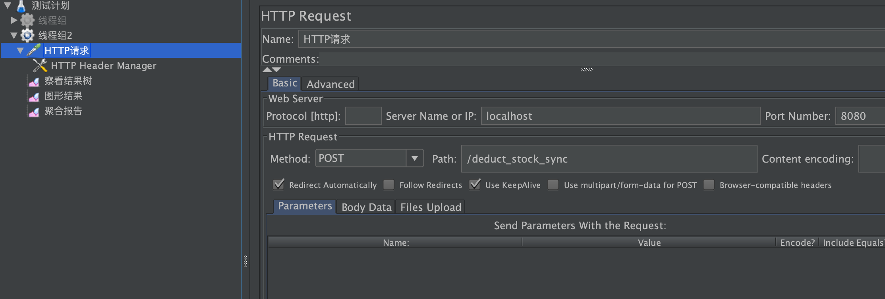
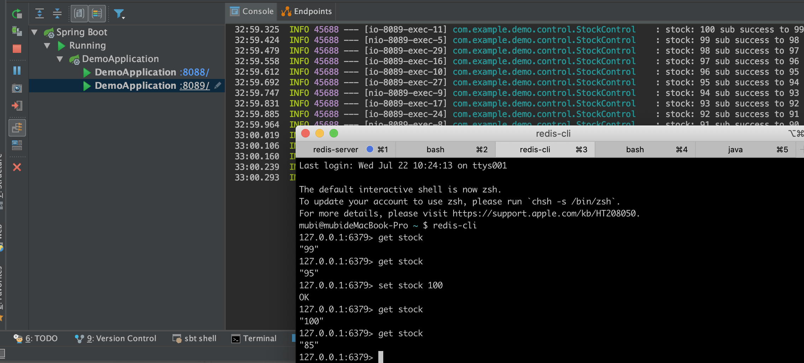
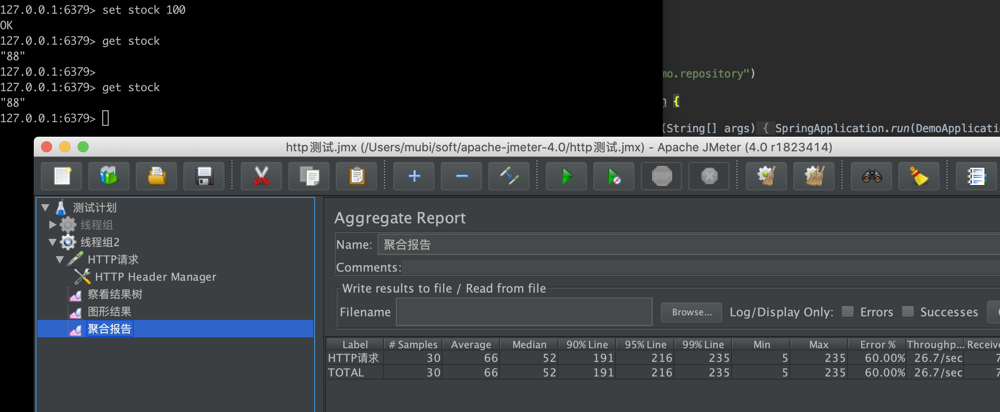
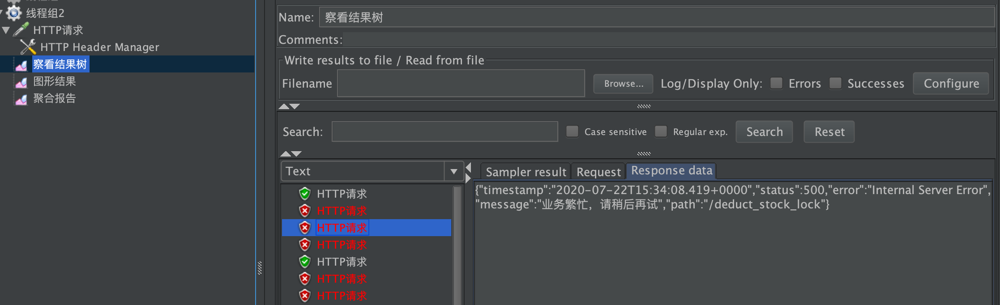
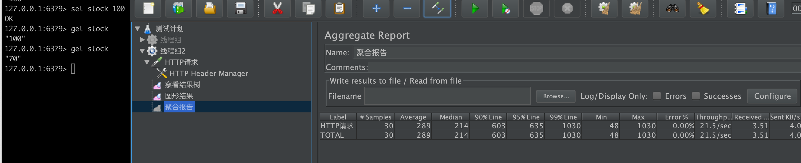
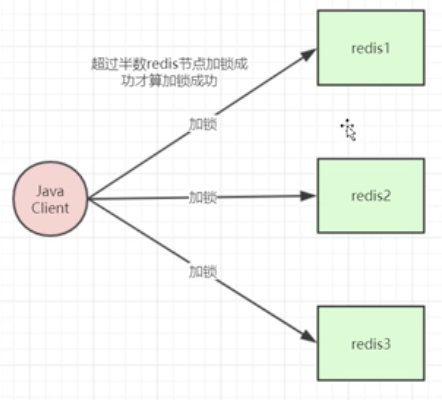
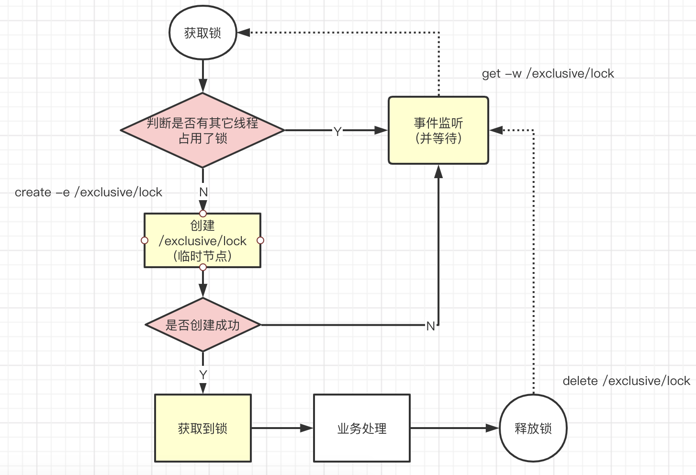
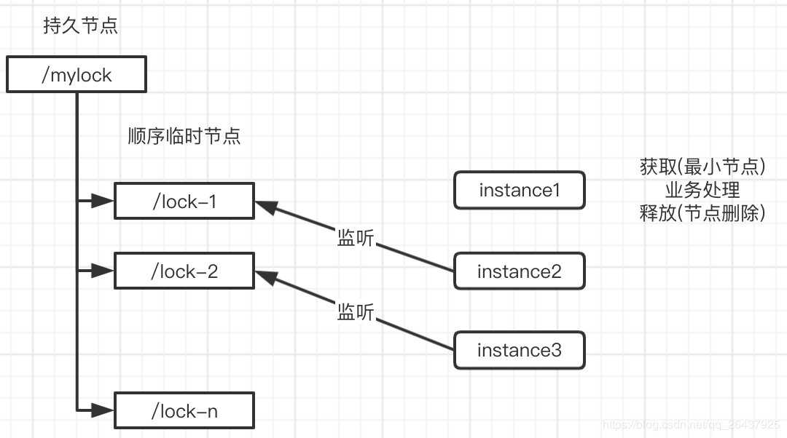
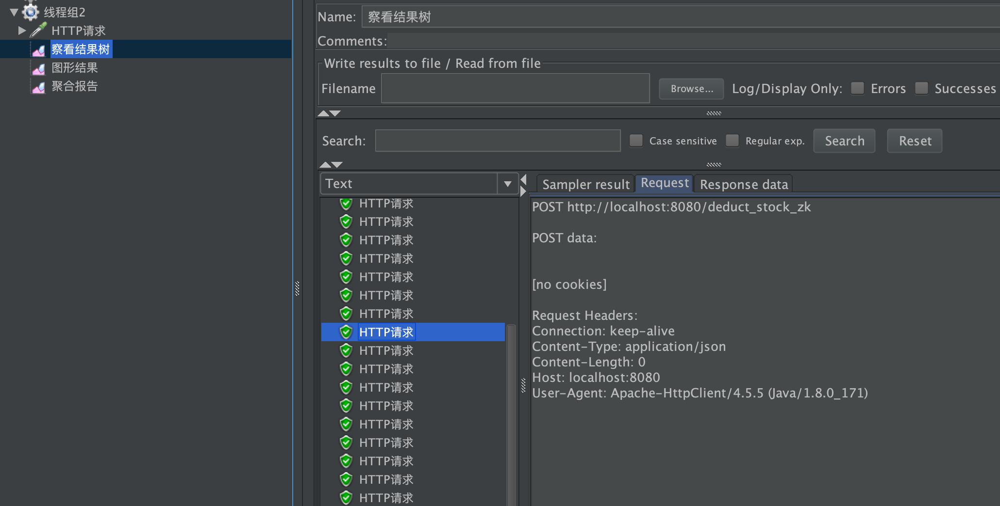
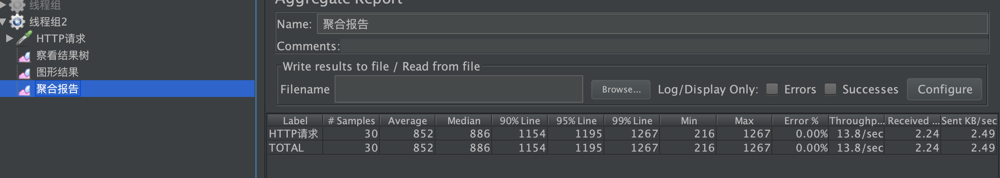

<!DOCTYPE HTML>
<html lang="zh-hans" >
    <head>
        <meta charset="UTF-8">
        <meta content="text/html; charset=utf-8" http-equiv="Content-Type">
        <title>分布式锁 · java-note</title>
        <meta http-equiv="X-UA-Compatible" content="IE=edge" />
        <meta name="description" content="">
        <meta name="generator" content="GitBook 3.2.3">
        <meta name="author" content="doctording">
        
        
    
    <link rel="stylesheet" href="../../gitbook/style.css">

    
            
                
                <link rel="stylesheet" href="../../gitbook/gitbook-plugin-prism/prism.css">
                
            
                
                <link rel="stylesheet" href="../../gitbook/gitbook-plugin-ace/ace.css">
                
            
                
                <link rel="stylesheet" href="../../gitbook/gitbook-plugin-codeblock-filename/block.css">
                
            
                
                <link rel="stylesheet" href="../../gitbook/gitbook-plugin-search-plus/search.css">
                
            
                
                <link rel="stylesheet" href="https://maxcdn.bootstrapcdn.com/bootstrap/3.3.7/css/bootstrap.min.css">
                
            
                
                <link rel="stylesheet" href="../../gitbook/gitbook-plugin-sectionx/sectionx.css">
                
            
                
                <link rel="stylesheet" href="../../gitbook/gitbook-plugin-splitter/splitter.css">
                
            
                
                <link rel="stylesheet" href="../../gitbook/gitbook-plugin-tbfed-pagefooter/footer.css">
                
            
                
                <link rel="stylesheet" href="../../gitbook/gitbook-plugin-expandable-chapters/expandable-chapters.css">
                
            
                
                <link rel="stylesheet" href="../../gitbook/gitbook-plugin-back-to-top-button/plugin.css">
                
            
                
                <link rel="stylesheet" href="../../gitbook/gitbook-plugin-code/plugin.css">
                
            
                
                <link rel="stylesheet" href="../../gitbook/gitbook-plugin-page-treeview/style.css">
                
            
                
                <link rel="stylesheet" href="../../gitbook/gitbook-plugin-fontsettings/website.css">
                
            
        

    

    
        
        <link rel="stylesheet" href="../../styles/website.css">
        
    

        
    
    
    <meta name="HandheldFriendly" content="true"/>
    <meta name="viewport" content="width=device-width, initial-scale=1, user-scalable=no">
    <meta name="apple-mobile-web-app-capable" content="yes">
    <meta name="apple-mobile-web-app-status-bar-style" content="black">
    <link rel="apple-touch-icon-precomposed" sizes="152x152" href="../../gitbook/images/apple-touch-icon-precomposed-152.png">
    <link rel="shortcut icon" href="../../gitbook/images/favicon.ico" type="image/x-icon">

    
    <link rel="next" href="distribute_id.html" />
    
    
    <link rel="prev" href="distribute_tx.html" />
    

    </head>
    <body>
        
<div class="book">
    <div class="book-summary">
        
            
<div id="book-search-input" role="search">
    <input type="text" placeholder="输入并搜索" />
</div>

            
                <nav role="navigation">
                


<ul class="summary">
    
    

    

    
        
        
    
        <li class="chapter " data-level="1.1" data-path="../../">
            
                <a href="../../">
            
                    
                    Introduction
            
                </a>
            

            
        </li>
    
        <li class="chapter " data-level="1.2" >
            
                <span>
            
                    
                    [1 常见设计模式]
            
                </span>
            

            
            <ul class="articles">
                
    
        <li class="chapter " data-level="1.2.1" data-path="../design_pattern/proxy.html">
            
                <a href="../design_pattern/proxy.html">
            
                    
                    代理模式
            
                </a>
            

            
        </li>
    
        <li class="chapter " data-level="1.2.2" data-path="../design_pattern/singleton.html">
            
                <a href="../design_pattern/singleton.html">
            
                    
                    单例模式
            
                </a>
            

            
        </li>
    
        <li class="chapter " data-level="1.2.3" data-path="../design_pattern/factory.html">
            
                <a href="../design_pattern/factory.html">
            
                    
                    工厂模式
            
                </a>
            

            
        </li>
    
        <li class="chapter " data-level="1.2.4" data-path="../design_pattern/template.html">
            
                <a href="../design_pattern/template.html">
            
                    
                    模板方法
            
                </a>
            

            
        </li>
    
        <li class="chapter " data-level="1.2.5" data-path="../design_pattern/strategy.html">
            
                <a href="../design_pattern/strategy.html">
            
                    
                    策略模式
            
                </a>
            

            
        </li>
    
        <li class="chapter " data-level="1.2.6" data-path="../design_pattern/decorator.html">
            
                <a href="../design_pattern/decorator.html">
            
                    
                    装饰器模式
            
                </a>
            

            
        </li>
    
        <li class="chapter " data-level="1.2.7" data-path="../design_pattern/observer.html">
            
                <a href="../design_pattern/observer.html">
            
                    
                    观察者模式
            
                </a>
            

            
        </li>
    
        <li class="chapter " data-level="1.2.8" data-path="../design_pattern/visitor.html">
            
                <a href="../design_pattern/visitor.html">
            
                    
                    访问者模式
            
                </a>
            

            
        </li>
    
        <li class="chapter " data-level="1.2.9" data-path="../design_pattern/iterator.html">
            
                <a href="../design_pattern/iterator.html">
            
                    
                    迭代器模式
            
                </a>
            

            
        </li>
    
        <li class="chapter " data-level="1.2.10" data-path="../design_pattern/facade.html">
            
                <a href="../design_pattern/facade.html">
            
                    
                    门面模式
            
                </a>
            

            
        </li>
    

            </ul>
            
        </li>
    
        <li class="chapter " data-level="1.3" >
            
                <span>
            
                    
                    [2 数据结构和算法基础]
            
                </span>
            

            
            <ul class="articles">
                
    
        <li class="chapter " data-level="1.3.1" data-path="../java_data_structure/java_basic_datastructure.html">
            
                <a href="../java_data_structure/java_basic_datastructure.html">
            
                    
                    常见基础数据结构
            
                </a>
            

            
            <ul class="articles">
                
    
        <li class="chapter " data-level="1.3.1.1" data-path="../java_data_structure/array_list.html">
            
                <a href="../java_data_structure/array_list.html">
            
                    
                    ArrayList & LinkedList
            
                </a>
            

            
        </li>
    
        <li class="chapter " data-level="1.3.1.2" data-path="../java_data_structure/hash_map.html">
            
                <a href="../java_data_structure/hash_map.html">
            
                    
                    HashMap
            
                </a>
            

            
        </li>
    
        <li class="chapter " data-level="1.3.1.3" data-path="../java_data_structure/hash_table.html">
            
                <a href="../java_data_structure/hash_table.html">
            
                    
                    HashTable
            
                </a>
            

            
        </li>
    
        <li class="chapter " data-level="1.3.1.4" data-path="../java_data_structure/Map.html">
            
                <a href="../java_data_structure/Map.html">
            
                    
                    HashMap,HashTable,ConcurrentHashMap 对比
            
                </a>
            

            
        </li>
    
        <li class="chapter " data-level="1.3.1.5" data-path="../java_data_structure/linked_hash_map.html">
            
                <a href="../java_data_structure/linked_hash_map.html">
            
                    
                    LinkedHashMap
            
                </a>
            

            
        </li>
    
        <li class="chapter " data-level="1.3.1.6" data-path="../java_data_structure/fail_fast.html">
            
                <a href="../java_data_structure/fail_fast.html">
            
                    
                    fail-fast,ConcurrentModificationException
            
                </a>
            

            
        </li>
    
        <li class="chapter " data-level="1.3.1.7" data-path="../java_utils/quick_sort.html">
            
                <a href="../java_utils/quick_sort.html">
            
                    
                    快排(没事手写写)
            
                </a>
            

            
        </li>
    

            </ul>
            
        </li>
    
        <li class="chapter " data-level="1.3.2" data-path="../java_data_structure/concurrent_datastructure.html">
            
                <a href="../java_data_structure/concurrent_datastructure.html">
            
                    
                    concurrent数据结构
            
                </a>
            

            
        </li>
    
        <li class="chapter " data-level="1.3.3" data-path="../java_data_structure/advanced_structure.html">
            
                <a href="../java_data_structure/advanced_structure.html">
            
                    
                    高级数据结构
            
                </a>
            

            
            <ul class="articles">
                
    
        <li class="chapter " data-level="1.3.3.1" data-path="../java_data_structure/b_tree.html">
            
                <a href="../java_data_structure/b_tree.html">
            
                    
                    B/B+ Tree
            
                </a>
            

            
        </li>
    

            </ul>
            
        </li>
    

            </ul>
            
        </li>
    
        <li class="chapter " data-level="1.4" >
            
                <span>
            
                    
                    [3 Java基础问题]
            
                </span>
            

            
            <ul class="articles">
                
    
        <li class="chapter " data-level="1.4.1" data-path="../java_data_structure/System_arraycopy.html">
            
                <a href="../java_data_structure/System_arraycopy.html">
            
                    
                    System.arraycopy, Array.copyOf
            
                </a>
            

            
        </li>
    
        <li class="chapter " data-level="1.4.2" data-path="../java_utils/equals_hashcode.html">
            
                <a href="../java_utils/equals_hashcode.html">
            
                    
                    == & equals方法 & hashcode方法
            
                </a>
            

            
        </li>
    
        <li class="chapter " data-level="1.4.3" data-path="../java_utils/Calendar.html">
            
                <a href="../java_utils/Calendar.html">
            
                    
                    Calendar & Date
            
                </a>
            

            
        </li>
    
        <li class="chapter " data-level="1.4.4" data-path="../java_utils/Compare.html">
            
                <a href="../java_utils/Compare.html">
            
                    
                    Comparison method violates its general contract
            
                </a>
            

            
        </li>
    
        <li class="chapter " data-level="1.4.5" data-path="../java_utils/int_Integer.html">
            
                <a href="../java_utils/int_Integer.html">
            
                    
                    int(基本类型) & Integer(包装类类型)
            
                </a>
            

            
        </li>
    
        <li class="chapter " data-level="1.4.6" data-path="../java_utils/exception.html">
            
                <a href="../java_utils/exception.html">
            
                    
                    Java异常&错误
            
                </a>
            

            
        </li>
    
        <li class="chapter " data-level="1.4.7" data-path="../java_utils/String.html">
            
                <a href="../java_utils/String.html">
            
                    
                    String,StringBuffer,StringBuilder
            
                </a>
            

            
        </li>
    
        <li class="chapter " data-level="1.4.8" data-path="../java_utils/reflect.html">
            
                <a href="../java_utils/reflect.html">
            
                    
                    反射机制
            
                </a>
            

            
        </li>
    
        <li class="chapter " data-level="1.4.9" data-path="../java_utils/call_back.html">
            
                <a href="../java_utils/call_back.html">
            
                    
                    回调 & 事件机制
            
                </a>
            

            
        </li>
    
        <li class="chapter " data-level="1.4.10" data-path="../java_utils/array_collection.html">
            
                <a href="../java_utils/array_collection.html">
            
                    
                    数组，集合转换等问题
            
                </a>
            

            
        </li>
    
        <li class="chapter " data-level="1.4.11" data-path="../java_utils/annotation.html">
            
                <a href="../java_utils/annotation.html">
            
                    
                    注解 Annotation
            
                </a>
            

            
        </li>
    
        <li class="chapter " data-level="1.4.12" data-path="../java_jvm/jvm_runtime.html">
            
                <a href="../java_jvm/jvm_runtime.html">
            
                    
                    Runtime类
            
                </a>
            

            
        </li>
    
        <li class="chapter " data-level="1.4.13" data-path="../java_data_structure/unsafe.html">
            
                <a href="../java_data_structure/unsafe.html">
            
                    
                    unsafe
            
                </a>
            

            
        </li>
    
        <li class="chapter " data-level="1.4.14" data-path="../java_thinking_in_Java/basic.html">
            
                <a href="../java_thinking_in_Java/basic.html">
            
                    
                    《Java编程思想》第3章：操作符，第4章：控制执行流程
            
                </a>
            

            
        </li>
    
        <li class="chapter " data-level="1.4.15" data-path="../java_thinking_in_Java/constructor.html">
            
                <a href="../java_thinking_in_Java/constructor.html">
            
                    
                    《Java编程思想》第5章：初始化和清理(重点)
            
                </a>
            

            
        </li>
    
        <li class="chapter " data-level="1.4.16" data-path="../java_thinking_in_Java/public_private_protect.html">
            
                <a href="../java_thinking_in_Java/public_private_protect.html">
            
                    
                    《Java编程思想》第6章：访问权限控制(重要)
            
                </a>
            

            
        </li>
    
        <li class="chapter " data-level="1.4.17" data-path="../java_thinking_in_Java/class_final.html">
            
                <a href="../java_thinking_in_Java/class_final.html">
            
                    
                    《Java编程思想》第7章：复用类
            
                </a>
            

            
        </li>
    
        <li class="chapter " data-level="1.4.18" data-path="../java_thinking_in_Java/polymorphism.html">
            
                <a href="../java_thinking_in_Java/polymorphism.html">
            
                    
                    《Java编程思想》第8章：多态
            
                </a>
            

            
        </li>
    
        <li class="chapter " data-level="1.4.19" data-path="../java_thinking_in_Java/class_final.html">
            
                <a href="../java_thinking_in_Java/class_final.html">
            
                    
                    《Java编程思想》第9章：接口 补充：抽象类
            
                </a>
            

            
        </li>
    
        <li class="chapter " data-level="1.4.20" data-path="../java_thinking_in_Java/innner_class.html">
            
                <a href="../java_thinking_in_Java/innner_class.html">
            
                    
                    《Java编程思想》第10章：内部类
            
                </a>
            

            
        </li>
    

            </ul>
            
        </li>
    
        <li class="chapter " data-level="1.5" >
            
                <span>
            
                    
                    [4 Java多线程 & 并发基础]
            
                </span>
            

            
            <ul class="articles">
                
    
        <li class="chapter " data-level="1.5.1" data-path="../java_thread_concurrent/aqs.html">
            
                <a href="../java_thread_concurrent/aqs.html">
            
                    
                    AQS
            
                </a>
            

            
        </li>
    
        <li class="chapter " data-level="1.5.2" data-path="../java_thread_concurrent/cas.html">
            
                <a href="../java_thread_concurrent/cas.html">
            
                    
                    CAS(Conmpare And Swap/Exchange) & unsafe
            
                </a>
            

            
        </li>
    
        <li class="chapter " data-level="1.5.3" data-path="../java_thread_concurrent/volatile.html">
            
                <a href="../java_thread_concurrent/volatile.html">
            
                    
                    volatile 关键字
            
                </a>
            

            
        </li>
    
        <li class="chapter " data-level="1.5.4" data-path="../java_thread_concurrent/synchronized.html">
            
                <a href="../java_thread_concurrent/synchronized.html">
            
                    
                    synchronized 关键字
            
                </a>
            

            
        </li>
    
        <li class="chapter " data-level="1.5.5" data-path="../java_thread_concurrent/thread_basic.html">
            
                <a href="../java_thread_concurrent/thread_basic.html">
            
                    
                    线程基础
            
                </a>
            

            
            <ul class="articles">
                
    
        <li class="chapter " data-level="1.5.5.1" data-path="../java_thread_concurrent/thread_condition.html">
            
                <a href="../java_thread_concurrent/thread_condition.html">
            
                    
                    Condition
            
                </a>
            

            
        </li>
    
        <li class="chapter " data-level="1.5.5.2" data-path="../java_thread_concurrent/semaphore.html">
            
                <a href="../java_thread_concurrent/semaphore.html">
            
                    
                    Semaphore
            
                </a>
            

            
        </li>
    
        <li class="chapter " data-level="1.5.5.3" data-path="../java_thread_concurrent/hook_thread.html">
            
                <a href="../java_thread_concurrent/hook_thread.html">
            
                    
                    Hook线程
            
                </a>
            

            
        </li>
    
        <li class="chapter " data-level="1.5.5.4" data-path="../java_thread_concurrent/countdownlatch_cyclicBarrier.html">
            
                <a href="../java_thread_concurrent/countdownlatch_cyclicBarrier.html">
            
                    
                    CountDownLatch & CyclicBarrier
            
                </a>
            

            
        </li>
    
        <li class="chapter " data-level="1.5.5.5" data-path="../java_thread_concurrent/longAdder.html">
            
                <a href="../java_thread_concurrent/longAdder.html">
            
                    
                    LongAdder
            
                </a>
            

            
        </li>
    
        <li class="chapter " data-level="1.5.5.6" data-path="../java_thread_concurrent/thread_design.html">
            
                <a href="../java_thread_concurrent/thread_design.html">
            
                    
                    多线程设计模式
            
                </a>
            

            
        </li>
    

            </ul>
            
        </li>
    
        <li class="chapter " data-level="1.5.6" data-path="../java_thread_concurrent/thread_pool.html">
            
                <a href="../java_thread_concurrent/thread_pool.html">
            
                    
                    线程池
            
                </a>
            

            
            <ul class="articles">
                
    
        <li class="chapter " data-level="1.5.6.1" data-path="../java_thread_concurrent/concurrency_problems.html">
            
                <a href="../java_thread_concurrent/concurrency_problems.html">
            
                    
                    常见的多线程题目
            
                </a>
            

            
        </li>
    
        <li class="chapter " data-level="1.5.6.2" data-path="../java_thread_concurrent/thread_pool_self.html">
            
                <a href="../java_thread_concurrent/thread_pool_self.html">
            
                    
                    自定义线程池
            
                </a>
            

            
        </li>
    

            </ul>
            
        </li>
    
        <li class="chapter " data-level="1.5.7" data-path="../java_thread_concurrent/thread_lock.html">
            
                <a href="../java_thread_concurrent/thread_lock.html">
            
                    
                    Java Lock
            
                </a>
            

            
        </li>
    
        <li class="chapter " data-level="1.5.8" data-path="../java_thread_concurrent/thread_deadlock.html">
            
                <a href="../java_thread_concurrent/thread_deadlock.html">
            
                    
                    死锁问题
            
                </a>
            

            
        </li>
    
        <li class="chapter " data-level="1.5.9" data-path="../java_thread_concurrent/threadLocal.html">
            
                <a href="../java_thread_concurrent/threadLocal.html">
            
                    
                    ThreadLocal对象
            
                </a>
            

            
        </li>
    

            </ul>
            
        </li>
    
        <li class="chapter " data-level="1.6" >
            
                <span>
            
                    
                    [5 Java8]
            
                </span>
            

            
            <ul class="articles">
                
    
        <li class="chapter " data-level="1.6.1" data-path="../java8/java8_completableFuture.html">
            
                <a href="../java8/java8_completableFuture.html">
            
                    
                    CompletableFuture
            
                </a>
            

            
        </li>
    
        <li class="chapter " data-level="1.6.2" data-path="../java8/java8_future.html">
            
                <a href="../java8/java8_future.html">
            
                    
                    Future
            
                </a>
            

            
        </li>
    
        <li class="chapter " data-level="1.6.3" data-path="../java8/interface_default.html">
            
                <a href="../java8/interface_default.html">
            
                    
                    interface defalt static
            
                </a>
            

            
        </li>
    
        <li class="chapter " data-level="1.6.4" data-path="../java8/java8_mem.html">
            
                <a href="../java8/java8_mem.html">
            
                    
                    Java8 jvm内存结构
            
                </a>
            

            
        </li>
    
        <li class="chapter " data-level="1.6.5" data-path="../java8/lambda.html">
            
                <a href="../java8/lambda.html">
            
                    
                    Java8 lambda表达式
            
                </a>
            

            
        </li>
    
        <li class="chapter " data-level="1.6.6" data-path="../java8/java8_optional.html">
            
                <a href="../java8/java8_optional.html">
            
                    
                    Java8 Optional
            
                </a>
            

            
        </li>
    
        <li class="chapter " data-level="1.6.7" data-path="../java8/streams.html">
            
                <a href="../java8/streams.html">
            
                    
                    Java8 Streams
            
                </a>
            

            
        </li>
    
        <li class="chapter " data-level="1.6.8" data-path="../java8/streams_parallel.html">
            
                <a href="../java8/streams_parallel.html">
            
                    
                    Java8 并行数据处理与性能
            
                </a>
            

            
        </li>
    

            </ul>
            
        </li>
    
        <li class="chapter " data-level="1.7" >
            
                <span>
            
                    
                    [6 JVM]
            
                </span>
            

            
            <ul class="articles">
                
    
        <li class="chapter " data-level="1.7.1" data-path="../java_jvm/jvm_mem_model.html">
            
                <a href="../java_jvm/jvm_mem_model.html">
            
                    
                    内存模型与线程
            
                </a>
            

            
        </li>
    
        <li class="chapter " data-level="1.7.2" data-path="../java_jvm/jvm_class_load.html">
            
                <a href="../java_jvm/jvm_class_load.html">
            
                    
                    类加载机制,类加载器,内存布局
            
                </a>
            

            
        </li>
    
        <li class="chapter " data-level="1.7.3" data-path="../java_jvm/jvm_mem_gc.html">
            
                <a href="../java_jvm/jvm_mem_gc.html">
            
                    
                    堆栈 & 各种GC
            
                </a>
            

            
        </li>
    
        <li class="chapter " data-level="1.7.4" data-path="../java_jvm/jvm_params.html">
            
                <a href="../java_jvm/jvm_params.html">
            
                    
                    JVM参数
            
                </a>
            

            
        </li>
    
        <li class="chapter " data-level="1.7.5" data-path="../java_jvm/jvm_tools.html">
            
                <a href="../java_jvm/jvm_tools.html">
            
                    
                    JVM命令工具(jstack,jmap,jcmd...)
            
                </a>
            

            
        </li>
    

            </ul>
            
        </li>
    
        <li class="chapter " data-level="1.8" >
            
                <span>
            
                    
                    [7 缓存 & 限流]
            
                </span>
            

            
            <ul class="articles">
                
    
        <li class="chapter " data-level="1.8.1" data-path="../db_cache/LFU.html">
            
                <a href="../db_cache/LFU.html">
            
                    
                    LFU
            
                </a>
            

            
        </li>
    
        <li class="chapter " data-level="1.8.2" data-path="../db_cache/LRU.html">
            
                <a href="../db_cache/LRU.html">
            
                    
                    LRU
            
                </a>
            

            
        </li>
    
        <li class="chapter " data-level="1.8.3" data-path="../db_cache/consistent_hash.html">
            
                <a href="../db_cache/consistent_hash.html">
            
                    
                    一致性Hash
            
                </a>
            

            
        </li>
    
        <li class="chapter " data-level="1.8.4" data-path="../db_cache/bloom.html">
            
                <a href="../db_cache/bloom.html">
            
                    
                    布隆过滤器
            
                </a>
            

            
        </li>
    
        <li class="chapter " data-level="1.8.5" data-path="../db_cache/cache.html">
            
                <a href="../db_cache/cache.html">
            
                    
                    缓存
            
                </a>
            

            
        </li>
    
        <li class="chapter " data-level="1.8.6" data-path="flow_limit.html">
            
                <a href="flow_limit.html">
            
                    
                    限流
            
                </a>
            

            
        </li>
    
        <li class="chapter " data-level="1.8.7" data-path="../java_thread_concurrent/cpu_cache.html">
            
                <a href="../java_thread_concurrent/cpu_cache.html">
            
                    
                    CPU,缓存
            
                </a>
            

            
        </li>
    

            </ul>
            
        </li>
    
        <li class="chapter " data-level="1.9" >
            
                <span>
            
                    
                    [8 数据库]
            
                </span>
            

            
            <ul class="articles">
                
    
        <li class="chapter " data-level="1.9.1" data-path="../db_cache/io.html">
            
                <a href="../db_cache/io.html">
            
                    
                    局部性原理&磁盘IO
            
                </a>
            

            
        </li>
    
        <li class="chapter " data-level="1.9.2" data-path="../db_cache/mysql.html">
            
                <a href="../db_cache/mysql.html">
            
                    
                    MySQL
            
                </a>
            

            
        </li>
    

            </ul>
            
        </li>
    
        <li class="chapter " data-level="1.10" >
            
                <span>
            
                    
                    [9 I/O & 网络]
            
                </span>
            

            
            <ul class="articles">
                
    
        <li class="chapter " data-level="1.10.1" data-path="../java_io_net/io_interrupte.html">
            
                <a href="../java_io_net/io_interrupte.html">
            
                    
                    IO和中断
            
                </a>
            

            
        </li>
    
        <li class="chapter " data-level="1.10.2" >
            
                <span>
            
                    
                    [Java IO]
            
                </span>
            

            
            <ul class="articles">
                
    
        <li class="chapter " data-level="1.10.2.1" data-path="../java_io_net/io_basic.html">
            
                <a href="../java_io_net/io_basic.html">
            
                    
                    IO必备基础
            
                </a>
            

            
        </li>
    
        <li class="chapter " data-level="1.10.2.2" data-path="../java_io_net/nio_basic.html">
            
                <a href="../java_io_net/nio_basic.html">
            
                    
                    BIO到NIO
            
                </a>
            

            
        </li>
    
        <li class="chapter " data-level="1.10.2.3" data-path="../java_io_net/from_io_to_epoll.html">
            
                <a href="../java_io_net/from_io_to_epoll.html">
            
                    
                    再谈select & epoll
            
                </a>
            

            
        </li>
    
        <li class="chapter " data-level="1.10.2.4" data-path="../java_io_net/server_socket_channel.html">
            
                <a href="../java_io_net/server_socket_channel.html">
            
                    
                    ServerSocketChannel
            
                </a>
            

            
        </li>
    

            </ul>
            
        </li>
    
        <li class="chapter " data-level="1.10.3" data-path="design.html">
            
                <a href="design.html">
            
                    
                    网络设计模式
            
                </a>
            

            
        </li>
    
        <li class="chapter " data-level="1.10.4" data-path="../java_io_net/http_tcp.html">
            
                <a href="../java_io_net/http_tcp.html">
            
                    
                    http & tcp
            
                </a>
            

            
        </li>
    
        <li class="chapter " data-level="1.10.5" data-path="nginx.html">
            
                <a href="nginx.html">
            
                    
                    nginx基础
            
                </a>
            

            
        </li>
    

            </ul>
            
        </li>
    
        <li class="chapter " data-level="1.11" >
            
                <span>
            
                    
                    [10 分布式]
            
                </span>
            

            
            <ul class="articles">
                
    
        <li class="chapter " data-level="1.11.1" data-path="distribute.html">
            
                <a href="distribute.html">
            
                    
                    分布式基础
            
                </a>
            

            
            <ul class="articles">
                
    
        <li class="chapter " data-level="1.11.1.1" data-path="distribute_tx.html">
            
                <a href="distribute_tx.html">
            
                    
                    分布式事务
            
                </a>
            

            
        </li>
    
        <li class="chapter active" data-level="1.11.1.2" data-path="distribute_lock.html">
            
                <a href="distribute_lock.html">
            
                    
                    分布式锁
            
                </a>
            

            
        </li>
    
        <li class="chapter " data-level="1.11.1.3" data-path="distribute_id.html">
            
                <a href="distribute_id.html">
            
                    
                    分布式ID
            
                </a>
            

            
        </li>
    

            </ul>
            
        </li>
    
        <li class="chapter " data-level="1.11.2" data-path="rpc.html">
            
                <a href="rpc.html">
            
                    
                    rpc
            
                </a>
            

            
        </li>
    
        <li class="chapter " data-level="1.11.3" data-path="zk.html">
            
                <a href="zk.html">
            
                    
                    zookeeper
            
                </a>
            

            
        </li>
    
        <li class="chapter " data-level="1.11.4" data-path="soa.html">
            
                <a href="soa.html">
            
                    
                    微服务
            
                </a>
            

            
        </li>
    

            </ul>
            
        </li>
    
        <li class="chapter " data-level="1.12" >
            
                <span>
            
                    
                    [11 剑指Offer]
            
                </span>
            

            
            <ul class="articles">
                
    
        <li class="chapter " data-level="1.12.1" data-path="../thought_of_solve/thought.html">
            
                <a href="../thought_of_solve/thought.html">
            
                    
                    剑指Offer解题思路(全)
            
                </a>
            

            
        </li>
    

            </ul>
            
        </li>
    

    

    <li class="divider"></li>

    <li>
        <a href="https://www.gitbook.com" target="blank" class="gitbook-link">
            本书使用 GitBook 发布
        </a>
    </li>
</ul>


                </nav>
            
        
    </div>

    <div class="book-body">
        
            <div class="body-inner">
                
                    

<div class="book-header" role="navigation">
    

    <!-- Title -->
    <h1>
        <i class="fa fa-circle-o-notch fa-spin"></i>
        <a href="../.." >分布式锁</a>
    </h1>
</div>


                    <div class="page-wrapper" tabindex="-1" role="main">
                        <div class="page-inner">
                            
<div class="search-plus" id="book-search-results">
    <div class="search-noresults">
    
                                <section class="normal markdown-section">
                                
                                <div class="treeview__container"><div class="treeview__container-title"><span class="treeview__main-title">Treeview</span><span class="treeview__copyright">Copyright @doctording all right reserved, powered by <a href="https://github.com/aleen42" target="_blank">aleen42</a></span></div><ul>
<li><div><a href="#&#x5206;&#x5E03;&#x5F0F;&#x9501;">&#x5206;&#x5E03;&#x5F0F;&#x9501;</a><i class="level__parent level__item level__parent--opened" state="opened" onclick="var curState = this.getAttribute(&apos;state&apos;);var nextState = curState === &apos;opened&apos; ? &apos;hidden&apos; : &apos;opened&apos;;this.setAttribute(&apos;state&apos;, nextState);this.className = this.className.split(curState).join(nextState);var list = this.parentNode.nextElementSibling;if (nextState === &apos;hidden&apos;) {    list.style.display = &apos;none&apos;;} else {    list.style.display = &apos;block&apos;;}"></i></div>
<ul>
<li><div><a href="#&#x4EC0;&#x4E48;&#x662F;&#x5206;&#x5E03;&#x5F0F;&#x9501;&#xFF1F;">&#x4EC0;&#x4E48;&#x662F;&#x5206;&#x5E03;&#x5F0F;&#x9501;&#xFF1F;</a><i></i></div></li>
<li><div><a href="#&#x5206;&#x5E03;&#x5F0F;&#x9501;&#x7684;&#x5B9E;&#x73B0;&#x65B9;&#x5F0F;">&#x5206;&#x5E03;&#x5F0F;&#x9501;&#x7684;&#x5B9E;&#x73B0;&#x65B9;&#x5F0F;</a><i class="level__parent level__item level__parent--opened" state="opened" onclick="var curState = this.getAttribute(&apos;state&apos;);var nextState = curState === &apos;opened&apos; ? &apos;hidden&apos; : &apos;opened&apos;;this.setAttribute(&apos;state&apos;, nextState);this.className = this.className.split(curState).join(nextState);var list = this.parentNode.nextElementSibling;if (nextState === &apos;hidden&apos;) {    list.style.display = &apos;none&apos;;} else {    list.style.display = &apos;block&apos;;}"></i></div>
<ul>
<li><div><a href="#&#x57FA;&#x4E8E;&#x6570;&#x636E;&#x5E93;mysql&#x5B9E;&#x73B0;">&#x57FA;&#x4E8E;&#x6570;&#x636E;&#x5E93;(mysql)&#x5B9E;&#x73B0;</a><i></i></div></li>
<li><div><a href="#&#x57FA;&#x4E8E;&#x7F13;&#x5B58;redis">&#x57FA;&#x4E8E;&#x7F13;&#x5B58;(redis)</a><i class="level__parent level__item level__parent--opened" state="opened" onclick="var curState = this.getAttribute(&apos;state&apos;);var nextState = curState === &apos;opened&apos; ? &apos;hidden&apos; : &apos;opened&apos;;this.setAttribute(&apos;state&apos;, nextState);this.className = this.className.split(curState).join(nextState);var list = this.parentNode.nextElementSibling;if (nextState === &apos;hidden&apos;) {    list.style.display = &apos;none&apos;;} else {    list.style.display = &apos;block&apos;;}"></i></div>
<ul>
<li><div><a href="#&#x591A;&#x5B9E;&#x4F8B;&#x5E76;&#x53D1;&#x8BBF;&#x95EE;&#x95EE;&#x9898;&#x6F14;&#x793A;">&#x591A;&#x5B9E;&#x4F8B;&#x5E76;&#x53D1;&#x8BBF;&#x95EE;&#x95EE;&#x9898;&#x6F14;&#x793A;</a><i class="level__parent level__item level__parent--opened" state="opened" onclick="var curState = this.getAttribute(&apos;state&apos;);var nextState = curState === &apos;opened&apos; ? &apos;hidden&apos; : &apos;opened&apos;;this.setAttribute(&apos;state&apos;, nextState);this.className = this.className.split(curState).join(nextState);var list = this.parentNode.nextElementSibling;if (nextState === &apos;hidden&apos;) {    list.style.display = &apos;none&apos;;} else {    list.style.display = &apos;block&apos;;}"></i></div>
<ul>
<li><div><a href="#&#x9879;&#x76EE;&#x4EE3;&#x7801;&#x4F7F;&#x7528;redis">&#x9879;&#x76EE;&#x4EE3;&#x7801;(&#x4F7F;&#x7528;redis)</a><i></i></div></li>
<li><div><a href="#&#x914D;&#x7F6E;nginxconf">&#x914D;&#x7F6E;nginx.conf</a><i></i></div></li>
<li><div><a href="#jmeter&#x538B;&#x6D4B;&#x590D;&#x73B0;&#x95EE;&#x9898;">jmeter&#x538B;&#x6D4B;&#x590D;&#x73B0;&#x95EE;&#x9898;</a><i class="level__parent level__item level__parent--opened" state="opened" onclick="var curState = this.getAttribute(&apos;state&apos;);var nextState = curState === &apos;opened&apos; ? &apos;hidden&apos; : &apos;opened&apos;;this.setAttribute(&apos;state&apos;, nextState);this.className = this.className.split(curState).join(nextState);var list = this.parentNode.nextElementSibling;if (nextState === &apos;hidden&apos;) {    list.style.display = &apos;none&apos;;} else {    list.style.display = &apos;block&apos;;}"></i></div>
<ul>
<li><div><a href="#&#x5E76;&#x53D1;&#x662F;1&#xFF0C;&#x5373;&#x4E0D;&#x4EA7;&#x751F;&#x5E76;&#x53D1;&#x95EE;&#x9898;">&#x5E76;&#x53D1;&#x662F;1&#xFF0C;&#x5373;&#x4E0D;&#x4EA7;&#x751F;&#x5E76;&#x53D1;&#x95EE;&#x9898;</a><i></i></div></li>
<li><div><a href="#&#x5E76;&#x53D1;30&#x6D4B;&#x8BD5;&#x4EA7;&#x751F;&#x5E76;&#x53D1;&#x95EE;&#x9898;&#x867D;&#x7136;&#x5355;&#x5B9E;&#x4F8B;&#x662F;synchronized">&#x5E76;&#x53D1;30&#x6D4B;&#x8BD5;,&#x4EA7;&#x751F;&#x5E76;&#x53D1;&#x95EE;&#x9898;(&#x867D;&#x7136;&#x5355;&#x5B9E;&#x4F8B;&#x662F;synchronized)</a><i></i></div></li>
</ul></li>
</ul></li>
<li><div><a href="#redis-&#x5206;&#x5E03;&#x5F0F;&#x9501;&#xFF1A;setnx&#x5B9E;&#x73B0;">redis &#x5206;&#x5E03;&#x5F0F;&#x9501;&#xFF1A;setnx&#x5B9E;&#x73B0;</a><i></i></div></li>
<li><div><a href="#redisson">Redisson</a><i class="level__parent level__item level__parent--opened" state="opened" onclick="var curState = this.getAttribute(&apos;state&apos;);var nextState = curState === &apos;opened&apos; ? &apos;hidden&apos; : &apos;opened&apos;;this.setAttribute(&apos;state&apos;, nextState);this.className = this.className.split(curState).join(nextState);var list = this.parentNode.nextElementSibling;if (nextState === &apos;hidden&apos;) {    list.style.display = &apos;none&apos;;} else {    list.style.display = &apos;block&apos;;}"></i></div>
<ul>
<li><div><a href="#&#x4EE3;&#x7801;&#x6D4B;&#x8BD5;">&#x4EE3;&#x7801;&amp;&#x6D4B;&#x8BD5;</a><i></i></div></li>
<li><div><a href="#&#x5E95;&#x5C42;&#x539F;&#x7406;">&#x5E95;&#x5C42;&#x539F;&#x7406;</a><i class="level__parent level__item level__parent--opened" state="opened" onclick="var curState = this.getAttribute(&apos;state&apos;);var nextState = curState === &apos;opened&apos; ? &apos;hidden&apos; : &apos;opened&apos;;this.setAttribute(&apos;state&apos;, nextState);this.className = this.className.split(curState).join(nextState);var list = this.parentNode.nextElementSibling;if (nextState === &apos;hidden&apos;) {    list.style.display = &apos;none&apos;;} else {    list.style.display = &apos;block&apos;;}"></i></div>
<ul>
<li><div><a href="#redis&#x4E3B;&#x4ECE;&#x67B6;&#x6784;&#x95EE;&#x9898;&#xFF1F;">redis&#x4E3B;&#x4ECE;&#x67B6;&#x6784;&#x95EE;&#x9898;&#xFF1F;</a><i></i></div></li>
<li><div><a href="#redlock">Redlock</a><i></i></div></li>
<li><div><a href="#&#x9AD8;&#x5E76;&#x53D1;&#x5206;&#x5E03;&#x5F0F;&#x9501;&#x5982;&#x4F55;&#x5B9E;&#x73B0;">&#x9AD8;&#x5E76;&#x53D1;&#x5206;&#x5E03;&#x5F0F;&#x9501;&#x5982;&#x4F55;&#x5B9E;&#x73B0;</a><i></i></div></li>
</ul></li>
</ul></li>
</ul></li>
<li><div><a href="#&#x57FA;&#x4E8E;zookeeper&#x5B9E;&#x73B0;">&#x57FA;&#x4E8E;ZooKeeper&#x5B9E;&#x73B0;</a><i class="level__parent level__item level__parent--opened" state="opened" onclick="var curState = this.getAttribute(&apos;state&apos;);var nextState = curState === &apos;opened&apos; ? &apos;hidden&apos; : &apos;opened&apos;;this.setAttribute(&apos;state&apos;, nextState);this.className = this.className.split(curState).join(nextState);var list = this.parentNode.nextElementSibling;if (nextState === &apos;hidden&apos;) {    list.style.display = &apos;none&apos;;} else {    list.style.display = &apos;block&apos;;}"></i></div>
<ul>
<li><div><a href="#zookeeper&#x8282;&#x70B9;&#x7C7B;&#x578B;">zookeeper&#x8282;&#x70B9;&#x7C7B;&#x578B;</a><i></i></div></li>
<li><div><a href="#zookeeper&#x7684;watch&#x673A;&#x5236;">zookeeper&#x7684;watch&#x673A;&#x5236;</a><i></i></div></li>
<li><div><a href="#zookeeper-lock">zookeeper lock</a><i class="level__parent level__item level__parent--opened" state="opened" onclick="var curState = this.getAttribute(&apos;state&apos;);var nextState = curState === &apos;opened&apos; ? &apos;hidden&apos; : &apos;opened&apos;;this.setAttribute(&apos;state&apos;, nextState);this.className = this.className.split(curState).join(nextState);var list = this.parentNode.nextElementSibling;if (nextState === &apos;hidden&apos;) {    list.style.display = &apos;none&apos;;} else {    list.style.display = &apos;block&apos;;}"></i></div>
<ul>
<li><div><a href="#&#x666E;&#x901A;&#x4E34;&#x65F6;&#x8282;&#x70B9;&#xFF08;&#x7F8A;&#x7FA4;&#x6548;&#x5E94;&#xFF09;">&#x666E;&#x901A;&#x4E34;&#x65F6;&#x8282;&#x70B9;&#xFF08;&#x7F8A;&#x7FA4;&#x6548;&#x5E94;&#xFF09;</a><i></i></div></li>
<li><div><a href="#&#x987A;&#x5E8F;&#x8282;&#x70B9;&#xFF08;&#x516C;&#x5E73;&#xFF0C;&#x907F;&#x514D;&#x7F8A;&#x7FA4;&#x6548;&#x5E94;&#xFF09;">&#x987A;&#x5E8F;&#x8282;&#x70B9;&#xFF08;&#x516C;&#x5E73;&#xFF0C;&#x907F;&#x514D;&#x7F8A;&#x7FA4;&#x6548;&#x5E94;&#xFF09;</a><i></i></div></li>
</ul></li>
<li><div><a href="#curator-interprocessmutex">Curator InterProcessMutex</a><i class="level__parent level__item level__parent--opened" state="opened" onclick="var curState = this.getAttribute(&apos;state&apos;);var nextState = curState === &apos;opened&apos; ? &apos;hidden&apos; : &apos;opened&apos;;this.setAttribute(&apos;state&apos;, nextState);this.className = this.className.split(curState).join(nextState);var list = this.parentNode.nextElementSibling;if (nextState === &apos;hidden&apos;) {    list.style.display = &apos;none&apos;;} else {    list.style.display = &apos;block&apos;;}"></i></div>
<ul>
<li><div><a href="#code&#x6D4B;&#x8BD5;">code&amp;&#x6D4B;&#x8BD5;</a><i></i></div></li>
<li><div><a href="#interprocessmutex-&#x5185;&#x90E8;&#x539F;&#x7406;">InterProcessMutex &#x5185;&#x90E8;&#x539F;&#x7406;</a><i></i></div></li>
</ul></li>
</ul></li>
</ul></li>
</ul></li>
</ul>
</div>


<p>[TOC]</p>
<h1 id="&#x5206;&#x5E03;&#x5F0F;&#x9501;">&#x5206;&#x5E03;&#x5F0F;&#x9501;</h1>
<h2 id="&#x4EC0;&#x4E48;&#x662F;&#x5206;&#x5E03;&#x5F0F;&#x9501;&#xFF1F;">&#x4EC0;&#x4E48;&#x662F;&#x5206;&#x5E03;&#x5F0F;&#x9501;&#xFF1F;</h2>
<p>&#x9501;&#xFF1A;&#x5171;&#x4EAB;&#x8D44;&#x6E90;&#xFF1B;&#x5171;&#x4EAB;&#x8D44;&#x6E90;&#x4E92;&#x65A5;&#x7684;&#xFF1B;&#x591A;&#x4EFB;&#x52A1;&#x73AF;&#x5883;
&#x5206;&#x5E03;&#x5F0F;&#x9501;&#xFF1A;&#x5982;&#x679C;&#x591A;&#x4EFB;&#x52A1;&#x662F;&#x591A;&#x4E2A;JVM&#x8FDB;&#x7A0B;&#xFF0C;&#x9700;&#x8981;&#x4E00;&#x4E2A;&#x5916;&#x90E8;&#x9501;&#xFF0C;&#x800C;&#x4E0D;&#x662F;JDK&#x63D0;&#x4F9B;&#x7684;&#x9501;</p>
<p>&#x5728;&#x5206;&#x5E03;&#x5F0F;&#x7684;&#x90E8;&#x7F72;&#x73AF;&#x5883;&#x4E0B;&#xFF0C;&#x901A;&#x8FC7;&#x9501;&#x673A;&#x5236;&#x6765;&#x8BA9;&#x591A;&#x5BA2;&#x6237;&#x7AEF;&#x4E92;&#x65A5;&#x7684;&#x5BF9;&#x5171;&#x4EAB;&#x8D44;&#x6E90;&#x8FDB;&#x884C;&#x8BBF;&#x95EE;</p>
<ul>
<li><p>&#x6392;&#x5B83;&#x6027;&#xFF1A;&#x5728;&#x540C;&#x4E00;&#x65F6;&#x95F4;&#x53EA;&#x4F1A;&#x6709;&#x4E00;&#x4E2A;&#x5BA2;&#x6237;&#x7AEF;&#x80FD;&#x83B7;&#x53D6;&#x5230;&#x9501;&#xFF0C;&#x5176;&#x5B83;&#x5BA2;&#x6237;&#x7AEF;&#x65E0;&#x6CD5;&#x540C;&#x65F6;&#x83B7;&#x53D6;</p>
</li>
<li><p>&#x907F;&#x514D;&#x6B7B;&#x9501;&#xFF1A;&#x8FD9;&#x628A;&#x9501;&#x5728;&#x4E00;&#x6BB5;&#x6709;&#x9650;&#x7684;&#x65F6;&#x95F4;&#x4E4B;&#x540E;&#xFF0C;&#x4E00;&#x5B9A;&#x4F1A;&#x88AB;&#x91CA;&#x653E;&#xFF08;&#x6B63;&#x5E38;&#x91CA;&#x653E;&#x6216;&#x5F02;&#x5E38;&#x91CA;&#x653E;&#xFF09;</p>
</li>
<li><p>&#x9AD8;&#x53EF;&#x7528;&#xFF1A;&#x83B7;&#x53D6;&#x6216;&#x91CA;&#x653E;&#x9501;&#x7684;&#x673A;&#x5236;&#x5FC5;&#x987B;&#x9AD8;&#x53EF;&#x7528;&#x4E14;&#x6027;&#x80FD;&#x4F73;</p>
</li>
</ul>
<h2 id="&#x5206;&#x5E03;&#x5F0F;&#x9501;&#x7684;&#x5B9E;&#x73B0;&#x65B9;&#x5F0F;">&#x5206;&#x5E03;&#x5F0F;&#x9501;&#x7684;&#x5B9E;&#x73B0;&#x65B9;&#x5F0F;</h2>
<h3 id="&#x57FA;&#x4E8E;&#x6570;&#x636E;&#x5E93;mysql&#x5B9E;&#x73B0;">&#x57FA;&#x4E8E;&#x6570;&#x636E;&#x5E93;(mysql)&#x5B9E;&#x73B0;</h3>
<p>&#x65B0;&#x5EFA;&#x4E00;&#x4E2A;&#x9501;&#x8868;</p>
<pre class="language-"><code class="lang-java">CREATE TABLE `methodLock` <span class="token punctuation">(</span>
`id` <span class="token keyword">int</span><span class="token punctuation">(</span><span class="token number">11</span><span class="token punctuation">)</span> NOT NULL AUTO_INCREMENT COMMENT <span class="token string">&apos;&#x4E3B;&#x952E;&apos;</span><span class="token punctuation">,</span>  
`method_name` <span class="token function">varchar</span><span class="token punctuation">(</span><span class="token number">64</span><span class="token punctuation">)</span> NOT NULL DEFAULT <span class="token string">&apos;&apos;</span> COMMENT <span class="token string">&apos;&#x9501;&#x5B9A;&#x7684;&#x65B9;&#x6CD5;&#x540D;&apos;</span><span class="token punctuation">,</span>
`desc` <span class="token function">varchar</span><span class="token punctuation">(</span><span class="token number">1024</span><span class="token punctuation">)</span> NOT NULL DEFAULT <span class="token string">&apos;&#x5907;&#x6CE8;&#x4FE1;&#x606F;&apos;</span><span class="token punctuation">,</span>  
`update_time` timestamp NOT NULL DEFAULT CURRENT_TIMESTAMP ON UPDATE CURRENT_TIMESTAMP COMMENT <span class="token string">&apos;&#x4FDD;&#x5B58;&#x6570;&#x636E;&#x65F6;&#x95F4;&#xFF0C;&#x81EA;&#x52A8;&#x751F;&#x6210;&apos;</span><span class="token punctuation">,</span>  
<span class="token class-name">PRIMARY</span> KEY <span class="token punctuation">(</span>`id`<span class="token punctuation">)</span><span class="token punctuation">,</span>  
UNIQUE KEY `uidx_method_name` <span class="token punctuation">(</span>`method_name `<span class="token punctuation">)</span> <span class="token class-name">USING</span> BTREE <span class="token punctuation">)</span> ENGINE<span class="token operator">=</span><span class="token class-name">InnoDB</span> <span class="token class-name">DEFAULT</span> CHARSET<span class="token operator">=</span>utf8 COMMENT<span class="token operator">=</span><span class="token string">&apos;&#x9501;&#x5B9A;&#x4E2D;&#x7684;&#x65B9;&#x6CD5;&apos;</span><span class="token punctuation">;</span>
</code></pre>
<ol>
<li>insert, delete(method_name&#x6709;&#x552F;&#x4E00;&#x7EA6;&#x675F;)</li>
</ol>
<p>&#x7F3A;&#x70B9;&#xFF1A;</p>
<pre class="language-"><code>* &#x6570;&#x636E;&#x5E93;&#x5355;&#x70B9;&#x4F1A;&#x5BFC;&#x81F4;&#x4E1A;&#x52A1;&#x4E0D;&#x53EF;&#x7528;
* &#x9501;&#x6CA1;&#x6709;&#x5931;&#x6548;&#x65F6;&#x95F4;&#xFF1A;&#x4E00;&#x65E6;&#x89E3;&#x9501;&#x64CD;&#x4F5C;&#x5931;&#x8D25;&#xFF0C;&#x5C31;&#x4F1A;&#x5BFC;&#x81F4;&#x9501;&#x8BB0;&#x5F55;&#x4E00;&#x76F4;&#x5728;&#x6570;&#x636E;&#x5E93;&#x4E2D;&#xFF0C;&#x5176;&#x5B83;&#x7EBF;&#x7A0B;&#x65E0;&#x6CD5;&#x518D;&#x83B7;&#x5F97;&#x5230;&#x9501;&#x3002;
* &#x975E;&#x91CD;&#x5165;&#x9501;&#xFF1A;&#x540C;&#x4E00;&#x4E2A;&#x7EBF;&#x7A0B;&#x5728;&#x6CA1;&#x6709;&#x91CA;&#x653E;&#x9501;&#x4E4B;&#x524D;&#x65E0;&#x6CD5;&#x518D;&#x6B21;&#x83B7;&#x5F97;&#x8BE5;&#x9501;&#x3002;&#x56E0;&#x4E3A;&#x6570;&#x636E;&#x4E2D;&#x6570;&#x636E;&#x5DF2;&#x7ECF;&#x5B58;&#x5728;&#x8BB0;&#x5F55;&#x4E86;
* &#x975E;&#x516C;&#x5E73;&#x9501;
</code></pre><ol>
<li>&#x901A;&#x8FC7;&#x6570;&#x636E;&#x5E93;&#x7684;<code>&#x6392;&#x4ED6;&#x9501;</code>&#x6765;&#x5B9E;&#x73B0;</li>
</ol>
<p>&#x5728;&#x67E5;&#x8BE2;&#x8BED;&#x53E5;&#x540E;&#x9762;&#x589E;&#x52A0;<code>for update</code>(&#x8868;&#x9501;&#xFF0C;&#x884C;&#x9501;)&#xFF0C;&#x6570;&#x636E;&#x5E93;&#x4F1A;&#x5728;&#x67E5;&#x8BE2;&#x8FC7;&#x7A0B;&#x4E2D;&#x7ED9;&#x6570;&#x636E;&#x5E93;&#x8868;&#x589E;&#x52A0;<code>&#x6392;&#x5B83;&#x9501;</code>&#x3002;&#x5F53;&#x67D0;&#x6761;&#x8BB0;&#x5F55;&#x88AB;&#x52A0;&#x4E0A;&#x6392;&#x4ED6;&#x9501;&#x4E4B;&#x540E;&#xFF0C;&#x5176;&#x5B83;&#x7EBF;&#x7A0B;&#x65E0;&#x6CD5;&#x518D;&#x5728;&#x8BE5;&#x884C;&#x8BB0;&#x5F55;&#x4E0A;&#x589E;&#x52A0;<code>&#x6392;&#x5B83;&#x9501;</code>&#x3002;&#x53EF;&#x4EE5;&#x8BA4;&#x4E3A;&#x83B7;&#x5F97;&#x6392;&#x5B83;&#x9501;&#x7684;&#x7EBF;&#x7A0B;&#x5373;&#x53EF;&#x83B7;&#x5F97;&#x5206;&#x5E03;&#x5F0F;&#x9501;&#xFF0C;&#x5F53;&#x83B7;&#x53D6;&#x5230;&#x9501;&#x4E4B;&#x540E;&#xFF0C;&#x53EF;&#x4EE5;&#x6267;&#x884C;&#x65B9;&#x6CD5;&#x7684;&#x4E1A;&#x52A1;&#x903B;&#x8F91;&#xFF0C;&#x6267;&#x884C;&#x5B8C;&#x65B9;&#x6CD5;&#x4E4B;&#x540E;&#xFF0C;&#x518D;&#x901A;&#x8FC7;connection.commit()&#x64CD;&#x4F5C;&#x6765;&#x91CA;&#x653E;&#x9501;</p>
<pre class="language-"><code class="lang-java"><span class="token keyword">public</span> <span class="token keyword">boolean</span> <span class="token function">lock</span><span class="token punctuation">(</span><span class="token punctuation">)</span><span class="token punctuation">{</span>
    connection<span class="token punctuation">.</span><span class="token function">setAutoCommit</span><span class="token punctuation">(</span><span class="token boolean">false</span><span class="token punctuation">)</span>
    <span class="token keyword">while</span> <span class="token punctuation">(</span><span class="token boolean">true</span><span class="token punctuation">)</span> <span class="token punctuation">{</span>
        <span class="token keyword">try</span> <span class="token punctuation">{</span>
            result <span class="token operator">=</span> select <span class="token operator">*</span> from methodLock where method_name<span class="token operator">=</span>xxx <span class="token keyword">for</span> update<span class="token punctuation">;</span>
            <span class="token keyword">if</span> <span class="token punctuation">(</span>result <span class="token operator">==</span> <span class="token keyword">null</span><span class="token punctuation">)</span> <span class="token punctuation">{</span>
                <span class="token keyword">return</span> <span class="token boolean">true</span><span class="token punctuation">;</span>
            <span class="token punctuation">}</span> 
        <span class="token punctuation">}</span> <span class="token keyword">catch</span> <span class="token punctuation">(</span><span class="token class-name">Exception</span> e<span class="token punctuation">)</span> <span class="token punctuation">{</span>
        <span class="token punctuation">}</span>
        <span class="token function">sleep</span><span class="token punctuation">(</span><span class="token number">1000</span><span class="token punctuation">)</span><span class="token punctuation">;</span>
    <span class="token punctuation">}</span>
    <span class="token keyword">return</span> <span class="token boolean">false</span><span class="token punctuation">;</span>
<span class="token punctuation">}</span>

<span class="token keyword">public</span> <span class="token keyword">void</span> <span class="token function">unlock</span><span class="token punctuation">(</span><span class="token punctuation">)</span><span class="token punctuation">{</span>
    connection<span class="token punctuation">.</span><span class="token function">commit</span><span class="token punctuation">(</span><span class="token punctuation">)</span><span class="token punctuation">;</span>
<span class="token punctuation">}</span>
</code></pre>
<h3 id="&#x57FA;&#x4E8E;&#x7F13;&#x5B58;redis">&#x57FA;&#x4E8E;&#x7F13;&#x5B58;(redis)</h3>
<h4 id="&#x591A;&#x5B9E;&#x4F8B;&#x5E76;&#x53D1;&#x8BBF;&#x95EE;&#x95EE;&#x9898;&#x6F14;&#x793A;">&#x591A;&#x5B9E;&#x4F8B;&#x5E76;&#x53D1;&#x8BBF;&#x95EE;&#x95EE;&#x9898;&#x6F14;&#x793A;</h4>
<h5 id="&#x9879;&#x76EE;&#x4EE3;&#x7801;&#x4F7F;&#x7528;redis">&#x9879;&#x76EE;&#x4EE3;&#x7801;(&#x4F7F;&#x7528;redis)</h5>
<p>&#x89C1;&#x9879;&#x76EE;pr&#xFF1A;<a href="https://github.com/doctording/springboot_gradle_demos/pull/2" target="_blank">https://github.com/doctording/springboot_gradle_demos/pull/2</a></p>
<ul>
<li>Springboot&#x9879;&#x76EE;&#x542F;&#x52A8;&#x4E24;&#x4E2A;&#x5B9E;&#x4F8B;(&#x5373;&#x6709;&#x4E24;&#x4E2A;JVM&#x8FDB;&#x7A0B;)</li>
</ul>
<pre class="language-"><code class="lang-java">curl <span class="token operator">-</span><span class="token class-name">X</span> POST \
  http<span class="token operator">:</span><span class="token operator">/</span><span class="token operator">/</span>localhost<span class="token operator">:</span><span class="token number">8088</span><span class="token operator">/</span>deduct_stock_sync \
  <span class="token operator">-</span><span class="token class-name">H</span> <span class="token string">&apos;Content-Type: application/json&apos;</span>

curl <span class="token operator">-</span><span class="token class-name">X</span> POST \
  http<span class="token operator">:</span><span class="token operator">/</span><span class="token operator">/</span>localhost<span class="token operator">:</span><span class="token number">8089</span><span class="token operator">/</span>deduct_stock_sync \
  <span class="token operator">-</span><span class="token class-name">H</span> <span class="token string">&apos;Content-Type: application/json&apos;</span>
</code></pre>
<p></p>
<h5 id="&#x914D;&#x7F6E;nginxconf">&#x914D;&#x7F6E;nginx.conf</h5>
<pre class="language-"><code class="lang-java">http <span class="token punctuation">{</span>
    include       mime<span class="token punctuation">.</span>types<span class="token punctuation">;</span>
    default_type  application<span class="token operator">/</span>octet<span class="token operator">-</span>stream<span class="token punctuation">;</span>

    #log_format  main  <span class="token string">&apos;$remote_addr - $remote_user [$time_local] &quot;$request&quot; &apos;</span>
    #                  <span class="token string">&apos;$status $body_bytes_sent &quot;$http_referer&quot; &apos;</span>
    #                  <span class="token string">&apos;&quot;$http_user_agent&quot; &quot;$http_x_forwarded_for&quot;&apos;</span><span class="token punctuation">;</span>

    #access_log  logs<span class="token operator">/</span>access<span class="token punctuation">.</span>log  main<span class="token punctuation">;</span>

    sendfile        on<span class="token punctuation">;</span>
    #tcp_nopush     on<span class="token punctuation">;</span>

    #keepalive_timeout  <span class="token number">0</span><span class="token punctuation">;</span>
    keepalive_timeout  <span class="token number">65</span><span class="token punctuation">;</span>

    #gzip  on<span class="token punctuation">;</span>
    upstream redislock<span class="token punctuation">{</span>
        server localhost<span class="token operator">:</span><span class="token number">8088</span> weight<span class="token operator">=</span><span class="token number">1</span><span class="token punctuation">;</span>
        server localhost<span class="token operator">:</span><span class="token number">8089</span> weight<span class="token operator">=</span><span class="token number">1</span><span class="token punctuation">;</span>
    <span class="token punctuation">}</span>

    server <span class="token punctuation">{</span>
        listen       <span class="token number">8080</span><span class="token punctuation">;</span>
        server_name  localhost<span class="token punctuation">;</span>

        #charset koi8<span class="token operator">-</span>r<span class="token punctuation">;</span>

        #access_log  logs<span class="token operator">/</span>host<span class="token punctuation">.</span>access<span class="token punctuation">.</span>log  main<span class="token punctuation">;</span>

        location <span class="token operator">/</span> <span class="token punctuation">{</span>
            root   html<span class="token punctuation">;</span>
            index  index<span class="token punctuation">.</span>html index<span class="token punctuation">.</span>htm<span class="token punctuation">;</span>
            proxy_pass  http<span class="token operator">:</span><span class="token operator">/</span><span class="token operator">/</span>redislock<span class="token punctuation">;</span>
        <span class="token punctuation">}</span>
    <span class="token punctuation">}</span>
<span class="token punctuation">}</span>
</code></pre>
<ul>
<li>nginx&#x542F;&#x52A8;&#x548C;&#x5173;&#x95ED;&#x547D;&#x4EE4;</li>
</ul>
<pre class="language-"><code class="lang-java">mubi<span class="token annotation punctuation">@mubideMacBook</span><span class="token operator">-</span><span class="token class-name">Pro</span> nginx $ sudo nginx
mubi<span class="token annotation punctuation">@mubideMacBook</span><span class="token operator">-</span><span class="token class-name">Pro</span> nginx $ ps <span class="token operator">-</span>ef <span class="token operator">|</span> grep nginx
    <span class="token number">0</span> <span class="token number">47802</span>     <span class="token number">1</span>   <span class="token number">0</span>  <span class="token number">1</span><span class="token operator">:</span><span class="token number">18</span>&#x4E0B;&#x5348; <span class="token operator">?</span><span class="token operator">?</span>         <span class="token number">0</span><span class="token operator">:</span><span class="token number">00.00</span> nginx<span class="token operator">:</span> master process nginx
   <span class="token operator">-</span><span class="token number">2</span> <span class="token number">47803</span> <span class="token number">47802</span>   <span class="token number">0</span>  <span class="token number">1</span><span class="token operator">:</span><span class="token number">18</span>&#x4E0B;&#x5348; <span class="token operator">?</span><span class="token operator">?</span>         <span class="token number">0</span><span class="token operator">:</span><span class="token number">00.00</span> nginx<span class="token operator">:</span> worker process
  <span class="token number">501</span> <span class="token number">47835</span> <span class="token number">20264</span>   <span class="token number">0</span>  <span class="token number">1</span><span class="token operator">:</span><span class="token number">18</span>&#x4E0B;&#x5348; ttys001    <span class="token number">0</span><span class="token operator">:</span><span class="token number">00.00</span> grep <span class="token operator">--</span>color<span class="token operator">=</span>always nginx
mubi<span class="token annotation punctuation">@mubideMacBook</span><span class="token operator">-</span><span class="token class-name">Pro</span> nginx $
</code></pre>
<pre class="language-"><code class="lang-java">sudo nginx <span class="token operator">-</span>s stop
</code></pre>
<ul>
<li>&#x8BBF;&#x95EE;&#x6D4B;&#x8BD5;</li>
</ul>
<pre class="language-"><code class="lang-java">curl <span class="token operator">-</span><span class="token class-name">X</span> POST \
  http<span class="token operator">:</span><span class="token operator">/</span><span class="token operator">/</span>localhost<span class="token operator">:</span><span class="token number">8080</span><span class="token operator">/</span>deduct_stock_sync \
  <span class="token operator">-</span><span class="token class-name">H</span> <span class="token string">&apos;Content-Type: application/json&apos;</span>
</code></pre>
<h5 id="jmeter&#x538B;&#x6D4B;&#x590D;&#x73B0;&#x95EE;&#x9898;">jmeter&#x538B;&#x6D4B;&#x590D;&#x73B0;&#x95EE;&#x9898;</h5>
<ul>
<li>redis &#x8BBE;&#x7F6E; stock &#x4E3A; 100</li>
</ul>
<p></p>
<h6 id="&#x5E76;&#x53D1;&#x662F;1&#xFF0C;&#x5373;&#x4E0D;&#x4EA7;&#x751F;&#x5E76;&#x53D1;&#x95EE;&#x9898;">&#x5E76;&#x53D1;&#x662F;1&#xFF0C;&#x5373;&#x4E0D;&#x4EA7;&#x751F;&#x5E76;&#x53D1;&#x95EE;&#x9898;</h6>
<p></p>
<p>redis get&#x7ED3;&#x679C;&#x4F1A;&#x662F;&#x6700;&#x7EC8;&#x7684;<code>70</code></p>
<h6 id="&#x5E76;&#x53D1;30&#x6D4B;&#x8BD5;&#x4EA7;&#x751F;&#x5E76;&#x53D1;&#x95EE;&#x9898;&#x867D;&#x7136;&#x5355;&#x5B9E;&#x4F8B;&#x662F;synchronized">&#x5E76;&#x53D1;30&#x6D4B;&#x8BD5;,&#x4EA7;&#x751F;&#x5E76;&#x53D1;&#x95EE;&#x9898;(&#x867D;&#x7136;&#x5355;&#x5B9E;&#x4F8B;&#x662F;<code>synchronized</code>)</h6>
<p></p>
<p></p>
<p></p>
<ul>
<li>&#x5E76;&#x53D1;30&#x8BBF;&#x95EE;&#x6D4B;&#x8BD5;&#x7ED3;&#x679C;&#xFF1A;&#x5E76;&#x4E0D;&#x662F;&#x6700;&#x540E;&#x7684;<code>70</code></li>
</ul>
<p></p>
<h4 id="redis-&#x5206;&#x5E03;&#x5F0F;&#x9501;&#xFF1A;setnx&#x5B9E;&#x73B0;">redis &#x5206;&#x5E03;&#x5F0F;&#x9501;&#xFF1A;setnx&#x5B9E;&#x73B0;</h4>
<p></p>
<ul>
<li>30&#x7684;&#x5E76;&#x53D1;&#x5931;&#x8D25;&#x7387;&#x662F;60%&#xFF0C;&#x5373;&#x53EA;&#x6709;12&#x4E2A;&#x6210;&#x529F;&#x7684;&#xFF0C;&#x6700;&#x540E;redis&#x7684;stock&#x503C;&#x662F;88&#x7B26;&#x5408;&#x9884;&#x671F;</li>
</ul>
<p>&#x53EF;&#x4EE5;&#x770B;&#x5230;&#x5927;&#x90E8;&#x5206;&#x6CA1;&#x6709;&#x62A2;&#x5230;redis&#x9501;&#xFF0C;&#x800C;&#x8FD4;&#x56DE;&#x4E86;&#x7CFB;&#x7EDF;&#x7E41;&#x5FD9;&#x9519;&#x8BEF;</p>
<p></p>
<p>&#x95EE;&#x9898;&#xFF1A;</p>
<ol>
<li>&#x8D85;&#x65F6;&#x65F6;&#x95F4;&#x662F;&#x4E2A;&#x95EE;&#x9898;&#xFF1A;&#x4E1A;&#x52A1;&#x65F6;&#x5E38;&#x4E0D;&#x786E;&#x5B9A;</li>
<li><p>&#x5176;&#x5B83;&#x7EBF;&#x7A0B;&#x53EF;&#x80FD;&#x5220;&#x9664;&#x522B;&#x7684;&#x7EBF;&#x7A0B;&#x7684;&#x9501;</p>
</li>
<li><p>&#x6539;&#x8FDB;1</p>
</li>
</ol>
<pre class="language-"><code class="lang-java"><span class="token annotation punctuation">@PostMapping</span><span class="token punctuation">(</span>value <span class="token operator">=</span> <span class="token string">&quot;/deduct_stock_lock&quot;</span><span class="token punctuation">)</span>
<span class="token keyword">public</span> <span class="token class-name">String</span> <span class="token function">deductStockLock</span><span class="token punctuation">(</span><span class="token punctuation">)</span> <span class="token keyword">throws</span> <span class="token class-name">Exception</span> <span class="token punctuation">{</span>
    <span class="token comment">// setnx&#xFF0C;redis&#x5355;&#x7EBF;&#x7A0B;</span>
    <span class="token class-name">String</span> lockKey <span class="token operator">=</span> <span class="token string">&quot;lockKey&quot;</span><span class="token punctuation">;</span>
    <span class="token class-name">String</span> clientId <span class="token operator">=</span> UUID<span class="token punctuation">.</span><span class="token function">randomUUID</span><span class="token punctuation">(</span><span class="token punctuation">)</span><span class="token punctuation">.</span><span class="token function">toString</span><span class="token punctuation">(</span><span class="token punctuation">)</span><span class="token punctuation">;</span>
    <span class="token comment">// &#x5982;&#x4E0B;&#x4E24;&#x53E5;&#x8981;&#x539F;&#x5B50;&#x64CD;&#x4F5C;</span>
<span class="token comment">//        Boolean setOk = stringRedisTemplate.opsForValue().setIfAbsent(lockKey, lockVal);</span>
<span class="token comment">//        stringRedisTemplate.expire(lockKey, 10 , TimeUnit.SECONDS); // &#x8BBE;&#x7F6E;&#x8FC7;&#x671F;&#x65F6;&#x95F4;</span>
    <span class="token class-name">Boolean</span> setOk <span class="token operator">=</span> stringRedisTemplate<span class="token punctuation">.</span><span class="token function">opsForValue</span><span class="token punctuation">(</span><span class="token punctuation">)</span><span class="token punctuation">.</span><span class="token function">setIfAbsent</span><span class="token punctuation">(</span>lockKey<span class="token punctuation">,</span> clientId<span class="token punctuation">,</span> <span class="token number">10</span><span class="token punctuation">,</span> <span class="token class-name">TimeUnit</span><span class="token punctuation">.</span>SECONDS<span class="token punctuation">)</span><span class="token punctuation">;</span>
    <span class="token keyword">if</span> <span class="token punctuation">(</span><span class="token operator">!</span>setOk<span class="token punctuation">)</span> <span class="token punctuation">{</span>
        <span class="token keyword">throw</span> <span class="token keyword">new</span> <span class="token class-name">Exception</span><span class="token punctuation">(</span><span class="token string">&quot;&#x4E1A;&#x52A1;&#x7E41;&#x5FD9;&#xFF0C;&#x8BF7;&#x7A0D;&#x540E;&#x518D;&#x8BD5;&quot;</span><span class="token punctuation">)</span><span class="token punctuation">;</span>
    <span class="token punctuation">}</span>

    <span class="token class-name">String</span> retVal<span class="token punctuation">;</span>
    <span class="token keyword">try</span> <span class="token punctuation">{</span>
        <span class="token comment">// &#x53EA;&#x6709;&#x4E00;&#x4E2A;&#x7EBF;&#x7A0B;&#x80FD;&#x6267;&#x884C;&#x6210;&#x529F;,&#x53EF;&#x80FD;&#x6709;&#x4E1A;&#x52A1;&#x5F02;&#x5E38;&#x629B;&#x51FA;&#x6765;&#xFF0C;&#x53EF;&#x80FD;&#x5B95;&#x673A;&#x7B49;&#x7B49;&#xFF1B;&#x4F46;&#x65E0;&#x8BBA;&#x5982;&#x4F55;&#x8981;&#x91CA;&#x653E;&#x9501;</span>
        retVal <span class="token operator">=</span> <span class="token function">stockReduce</span><span class="token punctuation">(</span><span class="token punctuation">)</span><span class="token punctuation">;</span>
    <span class="token punctuation">}</span> <span class="token keyword">finally</span> <span class="token punctuation">{</span>
        <span class="token comment">// &#x53EF;&#x80FD;&#x5931;&#x8D25;</span>
        <span class="token keyword">if</span> <span class="token punctuation">(</span>clientId<span class="token punctuation">.</span><span class="token function">equals</span><span class="token punctuation">(</span>stringRedisTemplate<span class="token punctuation">.</span><span class="token function">opsForValue</span><span class="token punctuation">(</span><span class="token punctuation">)</span><span class="token punctuation">.</span><span class="token function">get</span><span class="token punctuation">(</span>lockKey<span class="token punctuation">)</span><span class="token punctuation">)</span><span class="token punctuation">)</span> <span class="token punctuation">{</span>
            stringRedisTemplate<span class="token punctuation">.</span><span class="token function">delete</span><span class="token punctuation">(</span>lockKey<span class="token punctuation">)</span><span class="token punctuation">;</span>
        <span class="token punctuation">}</span>
    <span class="token punctuation">}</span>
    <span class="token keyword">return</span> retVal<span class="token punctuation">;</span>
<span class="token punctuation">}</span>
</code></pre>
<ul>
<li>&#x8D85;&#x65F6;&#x4E0D;&#x591F;&#xFF0C;&#x4E0D;&#x65AD;&#x7684;&#x5B9A;&#x65F6;&#x8BBE;&#x7F6E;&#xFF0C;&#x7ED9;&#x9501;&#x7EED;&#x547D;</li>
</ul>
<p>&#x5F00;&#x542F;&#x7EBF;&#x7A0B;&#xFF0C;&#x6BCF;&#x9694;&#x4E00;&#x6BB5;&#x65F6;&#x95F4;&#xFF0C;&#x5224;&#x65AD;&#x9501;&#x8FD8;&#x5728;&#x4E0D;&#x5728;&#xFF0C;&#x7136;&#x540E;&#x91CD;&#x65B0;&#x8BBE;&#x7F6E;&#x8FC7;&#x671F;&#x65F6;&#x95F4;</p>
<h4 id="redisson">Redisson</h4>
<h5 id="&#x4EE3;&#x7801;&#x6D4B;&#x8BD5;">&#x4EE3;&#x7801;&amp;&#x6D4B;&#x8BD5;</h5>
<pre class="language-"><code class="lang-java"><span class="token annotation punctuation">@Bean</span>
<span class="token keyword">public</span> <span class="token class-name">Redisson</span> <span class="token function">redisson</span><span class="token punctuation">(</span><span class="token punctuation">)</span><span class="token punctuation">{</span>
    <span class="token class-name">Config</span> config <span class="token operator">=</span> <span class="token keyword">new</span> <span class="token class-name">Config</span><span class="token punctuation">(</span><span class="token punctuation">)</span><span class="token punctuation">;</span>
    config<span class="token punctuation">.</span><span class="token function">useSingleServer</span><span class="token punctuation">(</span><span class="token punctuation">)</span><span class="token punctuation">.</span><span class="token function">setAddress</span><span class="token punctuation">(</span><span class="token string">&quot;redis://localhost:6379&quot;</span><span class="token punctuation">)</span><span class="token punctuation">.</span><span class="token function">setDatabase</span><span class="token punctuation">(</span><span class="token number">0</span><span class="token punctuation">)</span><span class="token punctuation">;</span>
    <span class="token keyword">return</span> <span class="token punctuation">(</span><span class="token class-name">Redisson</span><span class="token punctuation">)</span><span class="token class-name">Redisson</span><span class="token punctuation">.</span><span class="token function">create</span><span class="token punctuation">(</span>config<span class="token punctuation">)</span><span class="token punctuation">;</span>
<span class="token punctuation">}</span>
</code></pre>
<pre class="language-"><code class="lang-java"><span class="token annotation punctuation">@Autowired</span>
<span class="token keyword">private</span> <span class="token class-name">Redisson</span> redisson<span class="token punctuation">;</span>

<span class="token annotation punctuation">@PostMapping</span><span class="token punctuation">(</span>value <span class="token operator">=</span> <span class="token string">&quot;/deduct_stock_redisson&quot;</span><span class="token punctuation">)</span>
<span class="token keyword">public</span> <span class="token class-name">String</span> <span class="token function">deductStockRedisson</span><span class="token punctuation">(</span><span class="token punctuation">)</span> <span class="token keyword">throws</span> <span class="token class-name">Exception</span> <span class="token punctuation">{</span>
    <span class="token class-name">String</span> lockKey <span class="token operator">=</span> <span class="token string">&quot;lockKey&quot;</span><span class="token punctuation">;</span>
    <span class="token class-name">RLock</span> rLock <span class="token operator">=</span> redisson<span class="token punctuation">.</span><span class="token function">getLock</span><span class="token punctuation">(</span>lockKey<span class="token punctuation">)</span><span class="token punctuation">;</span>
    <span class="token class-name">String</span> retVal<span class="token punctuation">;</span>
    <span class="token keyword">try</span> <span class="token punctuation">{</span>
        rLock<span class="token punctuation">.</span><span class="token function">lock</span><span class="token punctuation">(</span><span class="token punctuation">)</span><span class="token punctuation">;</span>
        <span class="token comment">// &#x53EA;&#x6709;&#x4E00;&#x4E2A;&#x7EBF;&#x7A0B;&#x80FD;&#x6267;&#x884C;&#x6210;&#x529F;,&#x53EF;&#x80FD;&#x6709;&#x4E1A;&#x52A1;&#x5F02;&#x5E38;&#x629B;&#x51FA;&#x6765;&#xFF0C;&#x53EF;&#x80FD;&#x5B95;&#x673A;&#x7B49;&#x7B49;&#xFF1B;&#x4F46;&#x65E0;&#x8BBA;&#x5982;&#x4F55;&#x8981;&#x91CA;&#x653E;&#x9501;</span>
        retVal <span class="token operator">=</span> <span class="token function">stockReduce</span><span class="token punctuation">(</span><span class="token punctuation">)</span><span class="token punctuation">;</span>
    <span class="token punctuation">}</span> <span class="token keyword">finally</span> <span class="token punctuation">{</span>
        rLock<span class="token punctuation">.</span><span class="token function">unlock</span><span class="token punctuation">(</span><span class="token punctuation">)</span><span class="token punctuation">;</span>
    <span class="token punctuation">}</span>
    <span class="token keyword">return</span> retVal<span class="token punctuation">;</span>
<span class="token punctuation">}</span>
</code></pre>
<p></p>
<h5 id="&#x5E95;&#x5C42;&#x539F;&#x7406;">&#x5E95;&#x5C42;&#x539F;&#x7406;</h5>
<p></p>
<ul>
<li>setnx&#x7684;&#x8BBE;&#x7F6E;key&#x4E0E;&#x8FC7;&#x671F;&#x65F6;&#x95F4;&#x7528;&#x811A;&#x672C;&#x5B9E;&#x73B0;&#x539F;&#x5B50;&#x64CD;&#x4F5C;</li>
<li>key&#x8BBE;&#x7F6E;&#x6210;&#x529F;&#x9ED8;&#x8BA4;30s&#xFF0C;&#x5219;&#x6709;&#x540E;&#x53F0;&#x7EBF;&#x7A0B;&#x6BCF;10&#x79D2;(1/3&#x7684;&#x539F;&#x59CB;&#x8FC7;&#x671F;&#x65F6;&#x95F4;&#x5B9A;&#x65F6;&#x68C0;&#x67E5;)&#x68C0;&#x67E5;&#x5224;&#x65AD;&#xFF0C;&#x5EF6;&#x957F;&#x8FC7;&#x671F;&#x65F6;&#x95F4;()</li>
<li>&#x672A;&#x83B7;&#x53D6;&#x5230;&#x9501;&#x7684;&#x7EBF;&#x7A0B;&#x4F1A;&#x81EA;&#x65CB;&#xFF0C;&#x77E5;&#x9053;&#x83B7;&#x53D6;&#x5230;&#x9501;&#x7684;&#x5176;&#x5B83;&#x7EBF;&#x7A0B;&#x7684;&#x91CA;&#x653E;</li>
</ul>
<h6 id="redis&#x4E3B;&#x4ECE;&#x67B6;&#x6784;&#x95EE;&#x9898;&#xFF1F;">redis&#x4E3B;&#x4ECE;&#x67B6;&#x6784;&#x95EE;&#x9898;&#xFF1F;</h6>
<p>&#x8865;&#x5145;&#x77E5;&#x8BC6;&#xFF1A;redis&#x5355;&#x673A;qps&#x652F;&#x6301;&#xFF1A;10w&#x7EA7;&#x522B;</p>
<p>redis&#x4E3B;&#x4ECE;&#x67B6;&#x6784;&#x662F;&#x4E3B;&#x540C;&#x6B65;&#x5230;&#x4ECE;&#xFF0C;&#x5982;&#x679C;<code>&#x4E3B;</code>&#x8BBE;&#x7F6E;key&#x6210;&#x529F;&#xFF0C;&#x4F46;&#x662F;&#x540C;&#x6B65;&#x5230;<code>&#x4ECE;</code>&#x8FD8;&#x6CA1;&#x7ED3;&#x675F;&#xFF0C;&#x5C31;&#x6302;&#x4E86;&#xFF1B;&#x8FD9;&#x6837;<code>&#x4ECE;</code>&#x6210;&#x4E3A;&#x4E3B;&#xFF0C;&#x4F46;&#x662F;&#x662F;&#x6CA1;&#x6709;key&#x5B58;&#x5728;&#x7684;&#xFF0C;&#x90A3;&#x4E48;&#x53E6;&#x4E00;&#x4E2A;&#x7EBF;&#x7A0B;&#x53C8;&#x80FD;&#x591F;&#x52A0;&#x9501;&#x6210;&#x529F;&#x3002;&#xFF08;<font color="red">redis&#x4E3B;&#x4ECE;&#x67B6;&#x6784;&#x9501;&#x5931;&#x6548;&#x95EE;&#x9898;&#xFF1F;</font>&#xFF09;</p>
<p>redis&#x65E0;&#x6CD5;&#x4FDD;&#x8BC1;&#x5F3A;&#x4E00;&#x81F4;&#x6027;&#xFF1F;zookeeper&#x89E3;&#x51B3;&#xFF0C;&#x4F46;&#x662F;zk&#x6027;&#x80FD;&#x4E0D;&#x5982;redis</p>
<h6 id="redlock">Redlock</h6>
<p></p>
<ul>
<li>&#x52A0;&#x9501;&#x5931;&#x8D25;&#x7684;&#x56DE;&#x6EDA;</li>
<li>redis&#x52A0;&#x9501;&#x591A;&#xFF0C;&#x6027;&#x80FD;&#x53D7;&#x5F71;&#x54CD;</li>
</ul>
<h6 id="&#x9AD8;&#x5E76;&#x53D1;&#x5206;&#x5E03;&#x5F0F;&#x9501;&#x5982;&#x4F55;&#x5B9E;&#x73B0;">&#x9AD8;&#x5E76;&#x53D1;&#x5206;&#x5E03;&#x5F0F;&#x9501;&#x5982;&#x4F55;&#x5B9E;&#x73B0;</h6>
<ul>
<li>&#x5206;&#x6BB5;&#x9501;&#x601D;&#x60F3;</li>
</ul>
<h3 id="&#x57FA;&#x4E8E;zookeeper&#x5B9E;&#x73B0;">&#x57FA;&#x4E8E;ZooKeeper&#x5B9E;&#x73B0;</h3>
<p>&#x56DE;&#x987E;zookeeper&#x7684;&#x4E00;&#x4E9B;&#x76F8;&#x5173;&#x77E5;&#x8BC6;: <font color="red">&#x6587;&#x4EF6;&#x7CFB;&#x7EDF;+&#x76D1;&#x542C;&#x901A;&#x77E5;&#x673A;&#x5236;</font></p>
<h4 id="zookeeper&#x8282;&#x70B9;&#x7C7B;&#x578B;">zookeeper&#x8282;&#x70B9;&#x7C7B;&#x578B;</h4>
<ol>
<li>PERSISTENT-&#x6301;&#x4E45;&#x8282;&#x70B9;</li>
</ol>
<p>&#x9664;&#x975E;&#x624B;&#x52A8;&#x5220;&#x9664;&#xFF0C;&#x5426;&#x5219;&#x8282;&#x70B9;&#x4E00;&#x76F4;&#x5B58;&#x5728;&#x4E8E; Zookeeper &#x4E0A;; &#x91CD;&#x542F;Zookeeper&#x540E;&#x4E5F;&#x4F1A;&#x6062;&#x590D;</p>
<ol>
<li>EPHEMERAL-&#x4E34;&#x65F6;&#x8282;&#x70B9;</li>
</ol>
<p>&#x4E34;&#x65F6;&#x8282;&#x70B9;&#x7684;&#x751F;&#x547D;&#x5468;&#x671F;&#x4E0E;&#x5BA2;&#x6237;&#x7AEF;&#x4F1A;&#x8BDD;&#x7ED1;&#x5B9A;&#xFF0C;&#x4E00;&#x65E6;&#x5BA2;&#x6237;&#x7AEF;&#x4F1A;&#x8BDD;&#x5931;&#x6548;&#xFF08;&#x5BA2;&#x6237;&#x7AEF;&#x4E0E;zookeeper &#x8FDE;&#x63A5;&#x65AD;&#x5F00;&#x4E0D;&#x4E00;&#x5B9A;&#x4F1A;&#x8BDD;&#x5931;&#x6548;&#xFF09;&#xFF0C;&#x90A3;&#x4E48;&#x8FD9;&#x4E2A;&#x5BA2;&#x6237;&#x7AEF;&#x521B;&#x5EFA;&#x7684;&#x6240;&#x6709;&#x4E34;&#x65F6;&#x8282;&#x70B9;&#x90FD;&#x4F1A;&#x88AB;&#x79FB;&#x9664;&#x3002;</p>
<ol>
<li>PERSISTENT_SEQUENTIAL-&#x6301;&#x4E45;&#x987A;&#x5E8F;&#x8282;&#x70B9;</li>
</ol>
<p>&#x57FA;&#x672C;&#x7279;&#x6027;&#x540C;&#x6301;&#x4E45;&#x8282;&#x70B9;&#xFF0C;&#x53EA;&#x662F;&#x589E;&#x52A0;&#x4E86;&#x987A;&#x5E8F;&#x5C5E;&#x6027;&#xFF0C;&#x8282;&#x70B9;&#x540D;&#x540E;&#x8FB9;&#x4F1A;&#x8FFD;&#x52A0;&#x4E00;&#x4E2A;&#x7531;&#x7236;&#x8282;&#x70B9;&#x7EF4;&#x62A4;&#x7684;&#x81EA;&#x589E;&#x6574;&#x578B;&#x6570;&#x5B57;&#x3002;</p>
<ol>
<li>EPHEMERAL_SEQUENTIAL-&#x4E34;&#x65F6;&#x987A;&#x5E8F;&#x8282;&#x70B9;</li>
</ol>
<p>&#x57FA;&#x672C;&#x7279;&#x6027;&#x540C;&#x4E34;&#x65F6;&#x8282;&#x70B9;&#xFF0C;&#x589E;&#x52A0;&#x4E86;&#x987A;&#x5E8F;&#x5C5E;&#x6027;&#xFF0C;&#x8282;&#x70B9;&#x540D;&#x540E;&#x8FB9;&#x4F1A;&#x8FFD;&#x52A0;&#x4E00;&#x4E2A;&#x7531;&#x7236;&#x8282;&#x70B9;&#x7EF4;&#x62A4;&#x7684;&#x81EA;&#x589E;&#x6574;&#x578B;&#x6570;&#x5B57;&#x3002;</p>
<h4 id="zookeeper&#x7684;watch&#x673A;&#x5236;">zookeeper&#x7684;watch&#x673A;&#x5236;</h4>
<ul>
<li>&#x4E3B;&#x52A8;&#x63A8;&#x9001;&#xFF1A;watch&#x88AB;&#x89E6;&#x53D1;&#x65F6;&#xFF0C;&#x7531;zookeeper&#x4E3B;&#x52A8;&#x63A8;&#x9001;&#x7ED9;&#x5BA2;&#x6237;&#x7AEF;&#xFF0C;&#x800C;&#x4E0D;&#x9700;&#x8981;&#x5BA2;&#x6237;&#x7AEF;&#x8F6E;&#x8BE2;</li>
<li>&#x4E00;&#x6B21;&#x6027;&#xFF1A;&#x6570;&#x636E;&#x53D8;&#x5316;&#x65F6;&#xFF0C;watch&#x53EA;&#x4F1A;&#x88AB;&#x89E6;&#x53D1;&#x4E00;&#x6B21;&#xFF1B;&#x5982;&#x679C;&#x5BA2;&#x6237;&#x7AEF;&#x60F3;&#x5F97;&#x5230;&#x540E;&#x7EED;&#x66F4;&#x65B0;&#x7684;&#x901A;&#x77E5;&#xFF0C;&#x5FC5;&#x987B;&#x8981;&#x5728;watch&#x88AB;&#x89E6;&#x53D1;&#x540E;&#x91CD;&#x65B0;&#x6CE8;&#x518C;&#x4E00;&#x4E2A;watch</li>
<li>&#x53EF;&#x89C1;&#x6027;&#xFF1A;&#x5982;&#x679C;&#x4E00;&#x4E2A;&#x5BA2;&#x6237;&#x7AEF;&#x5728;&#x8BFB;&#x8BF7;&#x6C42;&#x4E2D;&#x9644;&#x5E26; Watch&#xFF0C;Watch &#x88AB;&#x89E6;&#x53D1;&#x7684;&#x540C;&#x65F6;&#x518D;&#x6B21;&#x8BFB;&#x53D6;&#x6570;&#x636E;&#xFF0C;&#x5BA2;&#x6237;&#x7AEF;&#x5728;&#x5F97;&#x5230; Watch&#x6D88;&#x606F;&#x4E4B;&#x524D;&#x80AF;&#x5B9A;&#x4E0D;&#x53EF;&#x80FD;&#x770B;&#x5230;&#x66F4;&#x65B0;&#x540E;&#x7684;&#x6570;&#x636E;&#x3002;&#x6362;&#x53E5;&#x8BDD;&#x8BF4;&#xFF0C;&#x66F4;&#x65B0;&#x901A;&#x77E5;&#x5148;&#x4E8E;&#x66F4;&#x65B0;&#x7ED3;&#x679C;</li>
<li>&#x987A;&#x5E8F;&#x6027;&#xFF1A;&#x5982;&#x679C;&#x591A;&#x4E2A;&#x66F4;&#x65B0;&#x89E6;&#x53D1;&#x4E86;&#x591A;&#x4E2A; Watch &#xFF0C;&#x90A3; Watch &#x88AB;&#x89E6;&#x53D1;&#x7684;&#x987A;&#x5E8F;&#x4E0E;&#x66F4;&#x65B0;&#x987A;&#x5E8F;&#x4E00;&#x81F4;</li>
</ul>
<h4 id="zookeeper-lock">zookeeper lock</h4>
<h5 id="&#x666E;&#x901A;&#x4E34;&#x65F6;&#x8282;&#x70B9;&#xFF08;&#x7F8A;&#x7FA4;&#x6548;&#x5E94;&#xFF09;">&#x666E;&#x901A;&#x4E34;&#x65F6;&#x8282;&#x70B9;&#xFF08;&#x7F8A;&#x7FA4;&#x6548;&#x5E94;&#xFF09;</h5>
<p></p>
<p>&#x6BD4;&#x5982;1000&#x4E2A;&#x5E76;&#x53D1;&#xFF0C;&#x53EA;&#x6709;1&#x4E2A;&#x5BA2;&#x6237;&#x7AEF;&#x83B7;&#x53D6;&#x9501;&#x6210;&#x529F;&#xFF0C;&#x5176;&#x5B83;999&#x4E2A;&#x5BA2;&#x6237;&#x7AEF;&#x90FD;&#x5904;&#x5728;&#x76D1;&#x542C;&#x5E76;&#x7B49;&#x5F85;&#x4E2D;&#xFF1B;&#x5982;&#x679C;&#x6210;&#x529F;&#x91CA;&#x653E;&#x9501;&#x4E86;&#xFF0C;&#x90A3;&#x4E48;999&#x4E2A;&#x5BA2;&#x6237;&#x7AEF;&#x90FD;&#x76D1;&#x542C;&#x5230;&#xFF0C;&#x518D;&#x6B21;&#x7EE7;&#x7EED;&#x8FDB;&#x884C;&#x521B;&#x5EFA;&#x9501;&#x7684;&#x6D41;&#x7A0B;&#x3002;</p>
<p>&#x6240;&#x4EE5;&#x6BCF;&#x6B21;&#x9501;&#x6709;&#x53D8;&#x5316;&#xFF0C;&#x51E0;&#x4E4E;&#x6240;&#x6709;&#x5BA2;&#x6237;&#x7AEF;&#x8282;&#x70B9;&#x90FD;&#x8981;&#x76D1;&#x542C;&#x5E76;&#x4F5C;&#x51FA;&#x53CD;&#x5E94;&#xFF0C;&#x8FD9;&#x4F1A;&#x7ED9;&#x96C6;&#x7FA4;&#x5E26;&#x6765;&#x5DE8;&#x5927;&#x538B;&#x529B;&#xFF0C;&#x5373;&#x4E3A;<font color="red">&#x7F8A;&#x7FA4;&#x6548;&#x5E94;</font></p>
<h5 id="&#x987A;&#x5E8F;&#x8282;&#x70B9;&#xFF08;&#x516C;&#x5E73;&#xFF0C;&#x907F;&#x514D;&#x7F8A;&#x7FA4;&#x6548;&#x5E94;&#xFF09;">&#x987A;&#x5E8F;&#x8282;&#x70B9;&#xFF08;&#x516C;&#x5E73;&#xFF0C;&#x907F;&#x514D;&#x7F8A;&#x7FA4;&#x6548;&#x5E94;&#xFF09;</h5>
<p></p>
<ol>
<li><p>&#x9996;&#x5148;&#x9700;&#x8981;&#x521B;&#x5EFA;&#x4E00;&#x4E2A;&#x7236;&#x8282;&#x70B9;&#xFF0C;&#x5C3D;&#x91CF;&#x662F;&#x6301;&#x4E45;&#x8282;&#x70B9;&#xFF08;PERSISTENT&#x7C7B;&#x578B;)</p>
</li>
<li><p>&#x6BCF;&#x4E2A;&#x8981;&#x83B7;&#x5F97;&#x9501;&#x7684;&#x7EBF;&#x7A0B;&#x90FD;&#x4F1A;&#x5728;&#x8FD9;&#x4E2A;&#x8282;&#x70B9;&#x4E0B;&#x521B;&#x5EFA;&#x4E2A;&#x4E34;&#x65F6;&#x987A;&#x5E8F;&#x8282;&#x70B9;&#xFF0C;</p>
</li>
<li><p>&#x7531;&#x4E8E;&#x5E8F;&#x53F7;&#x7684;&#x9012;&#x589E;&#x6027;&#xFF0C;&#x53EF;&#x4EE5;&#x89C4;&#x5B9A;&#x6392;&#x53F7;&#x6700;&#x5C0F;&#x7684;&#x90A3;&#x4E2A;&#x83B7;&#x5F97;&#x9501;&#x3002;</p>
</li>
<li><p>&#x6240;&#x4EE5;&#xFF0C;&#x6BCF;&#x4E2A;&#x7EBF;&#x7A0B;&#x5728;&#x5C1D;&#x8BD5;&#x5360;&#x7528;&#x9501;&#x4E4B;&#x524D;&#xFF0C;&#x9996;&#x5148;&#x5224;&#x65AD;&#x81EA;&#x5DF1;&#x662F;&#x6392;&#x53F7;&#x662F;&#x4E0D;&#x662F;&#x5F53;&#x524D;&#x6700;&#x5C0F;&#xFF0C;&#x5982;&#x679C;&#x662F;&#xFF0C;&#x5219;&#x83B7;&#x53D6;&#x9501;&#x3002;</p>
</li>
</ol>
<p>&#x5229;&#x7528;&#x987A;&#x5E8F;&#x6027;&#xFF1A;<font color="red">&#x6BCF;&#x4E2A;&#x7EBF;&#x7A0B;&#x90FD;&#x53EA;&#x76D1;&#x542C;&#x524D;&#x4E00;&#x4E2A;&#x7EBF;&#x7A0B;&#xFF0C;&#x4E8B;&#x4EF6;&#x901A;&#x77E5;&#x4E5F;&#x53EA;&#x901A;&#x77E5;&#x540E;&#x9762;&#x90FD;&#x4E00;&#x4E2A;&#x7EBF;&#x7A0B;&#xFF0C;&#x800C;&#x4E0D;&#x662F;&#x901A;&#x77E5;&#x5168;&#x90E8;</font></p>
<h4 id="curator-interprocessmutex">Curator InterProcessMutex</h4>
<p><a href="https://curator.apache.org/getting-started.html" target="_blank">curator&#x5B98;&#x65B9;&#x6587;&#x6863;</a></p>
<h5 id="code&#x6D4B;&#x8BD5;">code&amp;&#x6D4B;&#x8BD5;</h5>
<p><a href="https://github.com/doctording/springboot_gradle_demos/pull/3/files" target="_blank">&#x5B9E;&#x8DF5;&#x4EE3;&#x7801;&#x94FE;&#x63A5;</a></p>
<pre class="language-"><code class="lang-java"><span class="token annotation punctuation">@Component</span>
<span class="token keyword">public</span> <span class="token keyword">class</span> <span class="token class-name">CuratorConfiguration</span> <span class="token punctuation">{</span>

    <span class="token annotation punctuation">@Bean</span><span class="token punctuation">(</span>initMethod <span class="token operator">=</span> <span class="token string">&quot;start&quot;</span><span class="token punctuation">)</span>
    <span class="token keyword">public</span> <span class="token class-name">CuratorFramework</span> <span class="token function">curatorFramework</span><span class="token punctuation">(</span><span class="token punctuation">)</span> <span class="token punctuation">{</span>
        <span class="token class-name">RetryPolicy</span> retryPolicy <span class="token operator">=</span> <span class="token keyword">new</span> <span class="token class-name">ExponentialBackoffRetry</span><span class="token punctuation">(</span><span class="token number">1000</span><span class="token punctuation">,</span> <span class="token number">3</span><span class="token punctuation">)</span><span class="token punctuation">;</span>
        <span class="token class-name">CuratorFramework</span> client <span class="token operator">=</span> <span class="token class-name">CuratorFrameworkFactory</span><span class="token punctuation">.</span><span class="token function">newClient</span><span class="token punctuation">(</span>
                <span class="token string">&quot;127.0.0.1:2181&quot;</span><span class="token punctuation">,</span> retryPolicy<span class="token punctuation">)</span><span class="token punctuation">;</span>
        <span class="token keyword">return</span> client<span class="token punctuation">;</span>
    <span class="token punctuation">}</span>

<span class="token punctuation">}</span>
</code></pre>
<pre class="language-"><code class="lang-java"> <span class="token annotation punctuation">@Autowired</span>
<span class="token keyword">private</span> <span class="token class-name">CuratorFramework</span> curatorFramework<span class="token punctuation">;</span>

<span class="token annotation punctuation">@PostMapping</span><span class="token punctuation">(</span>value <span class="token operator">=</span> <span class="token string">&quot;/deduct_stock_zk&quot;</span><span class="token punctuation">)</span>
<span class="token keyword">public</span> <span class="token class-name">String</span> <span class="token function">deductStockZk</span><span class="token punctuation">(</span><span class="token punctuation">)</span> <span class="token keyword">throws</span> <span class="token class-name">Exception</span> <span class="token punctuation">{</span>
    <span class="token class-name">String</span> path <span class="token operator">=</span> <span class="token string">&quot;/stock&quot;</span><span class="token punctuation">;</span>
    <span class="token class-name">InterProcessMutex</span> interProcessMutex <span class="token operator">=</span> <span class="token keyword">new</span> <span class="token class-name">InterProcessMutex</span><span class="token punctuation">(</span>curatorFramework<span class="token punctuation">,</span> path<span class="token punctuation">)</span><span class="token punctuation">;</span>
    <span class="token class-name">String</span> retVal<span class="token punctuation">;</span>
    <span class="token keyword">try</span> <span class="token punctuation">{</span>
        interProcessMutex<span class="token punctuation">.</span><span class="token function">acquire</span><span class="token punctuation">(</span><span class="token punctuation">)</span><span class="token punctuation">;</span>
        retVal <span class="token operator">=</span> <span class="token function">stockReduce</span><span class="token punctuation">(</span><span class="token punctuation">)</span><span class="token punctuation">;</span>
    <span class="token punctuation">}</span> <span class="token keyword">catch</span> <span class="token punctuation">(</span><span class="token class-name">Exception</span> e<span class="token punctuation">)</span> <span class="token punctuation">{</span>
        <span class="token keyword">throw</span> <span class="token keyword">new</span> <span class="token class-name">Exception</span><span class="token punctuation">(</span><span class="token string">&quot;lock error&quot;</span><span class="token punctuation">)</span><span class="token punctuation">;</span>
    <span class="token punctuation">}</span> <span class="token keyword">finally</span> <span class="token punctuation">{</span>
        interProcessMutex<span class="token punctuation">.</span><span class="token function">release</span><span class="token punctuation">(</span><span class="token punctuation">)</span><span class="token punctuation">;</span>
    <span class="token punctuation">}</span>
    <span class="token keyword">return</span> retVal<span class="token punctuation">;</span>
<span class="token punctuation">}</span>
</code></pre>
<p></p>
<ul>
<li>&#x538B;&#x6D4B;&#x7ED3;&#x679C;</li>
</ul>
<p></p>
<p></p>
<h5 id="interprocessmutex-&#x5185;&#x90E8;&#x539F;&#x7406;">InterProcessMutex &#x5185;&#x90E8;&#x539F;&#x7406;</h5>
<ul>
<li>&#x521D;&#x59CB;&#x5316;</li>
</ul>
<pre class="language-"><code class="lang-java"><span class="token comment">/**
* @param client client
* @param path   the path to lock
* @param driver lock driver
*/</span>
<span class="token keyword">public</span> <span class="token class-name">InterProcessMutex</span><span class="token punctuation">(</span><span class="token class-name">CuratorFramework</span> client<span class="token punctuation">,</span> <span class="token class-name">String</span> path<span class="token punctuation">,</span> <span class="token class-name">LockInternalsDriver</span> driver<span class="token punctuation">)</span>
<span class="token punctuation">{</span>
    <span class="token keyword">this</span><span class="token punctuation">(</span>client<span class="token punctuation">,</span> path<span class="token punctuation">,</span> LOCK_NAME<span class="token punctuation">,</span> <span class="token number">1</span><span class="token punctuation">,</span> driver<span class="token punctuation">)</span><span class="token punctuation">;</span>
<span class="token punctuation">}</span>
</code></pre>
<pre class="language-"><code class="lang-java"> <span class="token comment">/**
    * Returns a facade of the current instance that tracks
    * watchers created and allows a one-shot removal of all watchers
    * via {@link WatcherRemoveCuratorFramework#removeWatchers()}
    *
    * @return facade
    */</span>
<span class="token keyword">public</span> <span class="token class-name">WatcherRemoveCuratorFramework</span> <span class="token function">newWatcherRemoveCuratorFramework</span><span class="token punctuation">(</span><span class="token punctuation">)</span><span class="token punctuation">;</span>
</code></pre>
<ul>
<li>&#x52A0;&#x9501;</li>
</ul>
<pre class="language-"><code class="lang-java"><span class="token keyword">private</span> <span class="token keyword">boolean</span> <span class="token function">internalLock</span><span class="token punctuation">(</span><span class="token keyword">long</span> time<span class="token punctuation">,</span> <span class="token class-name">TimeUnit</span> unit<span class="token punctuation">)</span> <span class="token keyword">throws</span> <span class="token class-name">Exception</span>
<span class="token punctuation">{</span>
    <span class="token comment">/*
        Note on concurrency: a given lockData instance
        can be only acted on by a single thread so locking isn&apos;t necessary
    */</span>

    <span class="token class-name">Thread</span> currentThread <span class="token operator">=</span> <span class="token class-name">Thread</span><span class="token punctuation">.</span><span class="token function">currentThread</span><span class="token punctuation">(</span><span class="token punctuation">)</span><span class="token punctuation">;</span>

    <span class="token comment">// &#x83B7;&#x53D6;&#x5F53;&#x524D;&#x7EBF;&#x7A0B;&#x9501;&#x6570;&#x636E;&#xFF0C;&#x83B7;&#x53D6;&#x5230;&#x7684;&#x5316;&#xFF0C;&#x8BBE;&#x7F6E;&#x53EF;&#x91CD;&#x5165;</span>
    <span class="token class-name">LockData</span> lockData <span class="token operator">=</span> threadData<span class="token punctuation">.</span><span class="token function">get</span><span class="token punctuation">(</span>currentThread<span class="token punctuation">)</span><span class="token punctuation">;</span>
    <span class="token keyword">if</span> <span class="token punctuation">(</span> lockData <span class="token operator">!=</span> <span class="token keyword">null</span> <span class="token punctuation">)</span>
    <span class="token punctuation">{</span>
        <span class="token comment">// re-entering</span>
        lockData<span class="token punctuation">.</span>lockCount<span class="token punctuation">.</span><span class="token function">incrementAndGet</span><span class="token punctuation">(</span><span class="token punctuation">)</span><span class="token punctuation">;</span>
        <span class="token keyword">return</span> <span class="token boolean">true</span><span class="token punctuation">;</span>
    <span class="token punctuation">}</span>
    <span class="token comment">// &#x5C1D;&#x8BD5;&#x83B7;&#x53D6;&#x9501;</span>
    <span class="token class-name">String</span> lockPath <span class="token operator">=</span> internals<span class="token punctuation">.</span><span class="token function">attemptLock</span><span class="token punctuation">(</span>time<span class="token punctuation">,</span> unit<span class="token punctuation">,</span> <span class="token function">getLockNodeBytes</span><span class="token punctuation">(</span><span class="token punctuation">)</span><span class="token punctuation">)</span><span class="token punctuation">;</span>
    <span class="token keyword">if</span> <span class="token punctuation">(</span> lockPath <span class="token operator">!=</span> <span class="token keyword">null</span> <span class="token punctuation">)</span>
    <span class="token punctuation">{</span>
        <span class="token comment">// &#x83B7;&#x53D6;&#x5230;&#x9501;&#xFF0C;&#x9501;&#x6570;&#x636E;&#x52A0;&#x5165;`threadData`&#x7684;map&#x7ED3;&#x6784;&#x4E2D;</span>
        <span class="token class-name">LockData</span> newLockData <span class="token operator">=</span> <span class="token keyword">new</span> <span class="token class-name">LockData</span><span class="token punctuation">(</span>currentThread<span class="token punctuation">,</span> lockPath<span class="token punctuation">)</span><span class="token punctuation">;</span>
        threadData<span class="token punctuation">.</span><span class="token function">put</span><span class="token punctuation">(</span>currentThread<span class="token punctuation">,</span> newLockData<span class="token punctuation">)</span><span class="token punctuation">;</span>
        <span class="token keyword">return</span> <span class="token boolean">true</span><span class="token punctuation">;</span>
    <span class="token punctuation">}</span>

    <span class="token comment">// &#x6CA1;&#x6709;&#x83B7;&#x53D6;&#x5230;&#x9501;</span>
    <span class="token keyword">return</span> <span class="token boolean">false</span><span class="token punctuation">;</span>
<span class="token punctuation">}</span>
</code></pre>
<pre class="language-"><code class="lang-java"><span class="token class-name">String</span> <span class="token function">attemptLock</span><span class="token punctuation">(</span><span class="token keyword">long</span> time<span class="token punctuation">,</span> <span class="token class-name">TimeUnit</span> unit<span class="token punctuation">,</span> <span class="token keyword">byte</span><span class="token punctuation">[</span><span class="token punctuation">]</span> lockNodeBytes<span class="token punctuation">)</span> <span class="token keyword">throws</span> <span class="token class-name">Exception</span>
<span class="token punctuation">{</span>
    <span class="token keyword">final</span> <span class="token keyword">long</span>      startMillis <span class="token operator">=</span> <span class="token class-name">System</span><span class="token punctuation">.</span><span class="token function">currentTimeMillis</span><span class="token punctuation">(</span><span class="token punctuation">)</span><span class="token punctuation">;</span>
    <span class="token keyword">final</span> <span class="token class-name">Long</span>      millisToWait <span class="token operator">=</span> <span class="token punctuation">(</span>unit <span class="token operator">!=</span> <span class="token keyword">null</span><span class="token punctuation">)</span> <span class="token operator">?</span> unit<span class="token punctuation">.</span><span class="token function">toMillis</span><span class="token punctuation">(</span>time<span class="token punctuation">)</span> <span class="token operator">:</span> <span class="token keyword">null</span><span class="token punctuation">;</span>
    <span class="token keyword">final</span> <span class="token keyword">byte</span><span class="token punctuation">[</span><span class="token punctuation">]</span>    localLockNodeBytes <span class="token operator">=</span> <span class="token punctuation">(</span>revocable<span class="token punctuation">.</span><span class="token function">get</span><span class="token punctuation">(</span><span class="token punctuation">)</span> <span class="token operator">!=</span> <span class="token keyword">null</span><span class="token punctuation">)</span> <span class="token operator">?</span> <span class="token keyword">new</span> <span class="token keyword">byte</span><span class="token punctuation">[</span><span class="token number">0</span><span class="token punctuation">]</span> <span class="token operator">:</span> lockNodeBytes<span class="token punctuation">;</span>
    <span class="token keyword">int</span>             retryCount <span class="token operator">=</span> <span class="token number">0</span><span class="token punctuation">;</span>

    <span class="token class-name">String</span>          ourPath <span class="token operator">=</span> <span class="token keyword">null</span><span class="token punctuation">;</span>
    <span class="token keyword">boolean</span>         hasTheLock <span class="token operator">=</span> <span class="token boolean">false</span><span class="token punctuation">;</span>
    <span class="token keyword">boolean</span>         isDone <span class="token operator">=</span> <span class="token boolean">false</span><span class="token punctuation">;</span>
    <span class="token keyword">while</span> <span class="token punctuation">(</span> <span class="token operator">!</span>isDone <span class="token punctuation">)</span>
    <span class="token punctuation">{</span>
        isDone <span class="token operator">=</span> <span class="token boolean">true</span><span class="token punctuation">;</span>

        <span class="token keyword">try</span>
        <span class="token punctuation">{</span>
            ourPath <span class="token operator">=</span> driver<span class="token punctuation">.</span><span class="token function">createsTheLock</span><span class="token punctuation">(</span>client<span class="token punctuation">,</span> path<span class="token punctuation">,</span> localLockNodeBytes<span class="token punctuation">)</span><span class="token punctuation">;</span>
            hasTheLock <span class="token operator">=</span> <span class="token function">internalLockLoop</span><span class="token punctuation">(</span>startMillis<span class="token punctuation">,</span> millisToWait<span class="token punctuation">,</span> ourPath<span class="token punctuation">)</span><span class="token punctuation">;</span>
        <span class="token punctuation">}</span>
        <span class="token keyword">catch</span> <span class="token punctuation">(</span> <span class="token class-name">KeeperException</span><span class="token punctuation">.</span><span class="token class-name">NoNodeException</span> e <span class="token punctuation">)</span>
        <span class="token punctuation">{</span>
            <span class="token comment">// gets thrown by StandardLockInternalsDriver when it can&apos;t find the lock node</span>
            <span class="token comment">// this can happen when the session expires, etc. So, if the retry allows, just try it all again</span>
            <span class="token keyword">if</span> <span class="token punctuation">(</span> client<span class="token punctuation">.</span><span class="token function">getZookeeperClient</span><span class="token punctuation">(</span><span class="token punctuation">)</span><span class="token punctuation">.</span><span class="token function">getRetryPolicy</span><span class="token punctuation">(</span><span class="token punctuation">)</span><span class="token punctuation">.</span><span class="token function">allowRetry</span><span class="token punctuation">(</span>retryCount<span class="token operator">++</span><span class="token punctuation">,</span> <span class="token class-name">System</span><span class="token punctuation">.</span><span class="token function">currentTimeMillis</span><span class="token punctuation">(</span><span class="token punctuation">)</span> <span class="token operator">-</span> startMillis<span class="token punctuation">,</span> <span class="token class-name">RetryLoop</span><span class="token punctuation">.</span><span class="token function">getDefaultRetrySleeper</span><span class="token punctuation">(</span><span class="token punctuation">)</span><span class="token punctuation">)</span> <span class="token punctuation">)</span>
            <span class="token punctuation">{</span>
                isDone <span class="token operator">=</span> <span class="token boolean">false</span><span class="token punctuation">;</span>
            <span class="token punctuation">}</span>
            <span class="token keyword">else</span>
            <span class="token punctuation">{</span>
                <span class="token keyword">throw</span> e<span class="token punctuation">;</span>
            <span class="token punctuation">}</span>
        <span class="token punctuation">}</span>
    <span class="token punctuation">}</span>

    <span class="token keyword">if</span> <span class="token punctuation">(</span> hasTheLock <span class="token punctuation">)</span>
    <span class="token punctuation">{</span>
        <span class="token keyword">return</span> ourPath<span class="token punctuation">;</span>
    <span class="token punctuation">}</span>

    <span class="token keyword">return</span> <span class="token keyword">null</span><span class="token punctuation">;</span>
<span class="token punctuation">}</span>
</code></pre>
<p>&#x521B;&#x5EFA;&#x9501;&#x662F;&#x521B;&#x5EFA;&#x7684;<code>&#x4E34;&#x65F6;&#x987A;&#x5E8F;</code>&#x8282;&#x70B9;</p>
<pre class="language-"><code class="lang-java"><span class="token annotation punctuation">@Override</span>
<span class="token keyword">public</span> <span class="token class-name">String</span> <span class="token function">createsTheLock</span><span class="token punctuation">(</span><span class="token class-name">CuratorFramework</span> client<span class="token punctuation">,</span> <span class="token class-name">String</span> path<span class="token punctuation">,</span> <span class="token keyword">byte</span><span class="token punctuation">[</span><span class="token punctuation">]</span> lockNodeBytes<span class="token punctuation">)</span> <span class="token keyword">throws</span> <span class="token class-name">Exception</span>
<span class="token punctuation">{</span>
    <span class="token class-name">String</span> ourPath<span class="token punctuation">;</span>
    <span class="token keyword">if</span> <span class="token punctuation">(</span> lockNodeBytes <span class="token operator">!=</span> <span class="token keyword">null</span> <span class="token punctuation">)</span>
    <span class="token punctuation">{</span>
        ourPath <span class="token operator">=</span> client<span class="token punctuation">.</span><span class="token function">create</span><span class="token punctuation">(</span><span class="token punctuation">)</span><span class="token punctuation">.</span><span class="token function">creatingParentContainersIfNeeded</span><span class="token punctuation">(</span><span class="token punctuation">)</span><span class="token punctuation">.</span><span class="token function">withProtection</span><span class="token punctuation">(</span><span class="token punctuation">)</span><span class="token punctuation">.</span><span class="token function">withMode</span><span class="token punctuation">(</span><span class="token class-name">CreateMode</span><span class="token punctuation">.</span>EPHEMERAL_SEQUENTIAL<span class="token punctuation">)</span><span class="token punctuation">.</span><span class="token function">forPath</span><span class="token punctuation">(</span>path<span class="token punctuation">,</span> lockNodeBytes<span class="token punctuation">)</span><span class="token punctuation">;</span>
    <span class="token punctuation">}</span>
    <span class="token keyword">else</span>
    <span class="token punctuation">{</span>
        ourPath <span class="token operator">=</span> client<span class="token punctuation">.</span><span class="token function">create</span><span class="token punctuation">(</span><span class="token punctuation">)</span><span class="token punctuation">.</span><span class="token function">creatingParentContainersIfNeeded</span><span class="token punctuation">(</span><span class="token punctuation">)</span><span class="token punctuation">.</span><span class="token function">withProtection</span><span class="token punctuation">(</span><span class="token punctuation">)</span><span class="token punctuation">.</span><span class="token function">withMode</span><span class="token punctuation">(</span><span class="token class-name">CreateMode</span><span class="token punctuation">.</span>EPHEMERAL_SEQUENTIAL<span class="token punctuation">)</span><span class="token punctuation">.</span><span class="token function">forPath</span><span class="token punctuation">(</span>path<span class="token punctuation">)</span><span class="token punctuation">;</span>
    <span class="token punctuation">}</span>
    <span class="token keyword">return</span> ourPath<span class="token punctuation">;</span>
<span class="token punctuation">}</span>
</code></pre>
<ul>
<li>watch</li>
</ul>
<pre class="language-"><code class="lang-java"><span class="token keyword">private</span> <span class="token keyword">boolean</span> <span class="token function">internalLockLoop</span><span class="token punctuation">(</span><span class="token keyword">long</span> startMillis<span class="token punctuation">,</span> <span class="token class-name">Long</span> millisToWait<span class="token punctuation">,</span> <span class="token class-name">String</span> ourPath<span class="token punctuation">)</span> <span class="token keyword">throws</span> <span class="token class-name">Exception</span>
<span class="token punctuation">{</span>
    <span class="token keyword">boolean</span>     haveTheLock <span class="token operator">=</span> <span class="token boolean">false</span><span class="token punctuation">;</span>
    <span class="token keyword">boolean</span>     doDelete <span class="token operator">=</span> <span class="token boolean">false</span><span class="token punctuation">;</span>
    <span class="token keyword">try</span>
    <span class="token punctuation">{</span>
        <span class="token keyword">if</span> <span class="token punctuation">(</span> revocable<span class="token punctuation">.</span><span class="token function">get</span><span class="token punctuation">(</span><span class="token punctuation">)</span> <span class="token operator">!=</span> <span class="token keyword">null</span> <span class="token punctuation">)</span>
        <span class="token punctuation">{</span>
            client<span class="token punctuation">.</span><span class="token function">getData</span><span class="token punctuation">(</span><span class="token punctuation">)</span><span class="token punctuation">.</span><span class="token function">usingWatcher</span><span class="token punctuation">(</span>revocableWatcher<span class="token punctuation">)</span><span class="token punctuation">.</span><span class="token function">forPath</span><span class="token punctuation">(</span>ourPath<span class="token punctuation">)</span><span class="token punctuation">;</span>
        <span class="token punctuation">}</span>

        <span class="token keyword">while</span> <span class="token punctuation">(</span> <span class="token punctuation">(</span>client<span class="token punctuation">.</span><span class="token function">getState</span><span class="token punctuation">(</span><span class="token punctuation">)</span> <span class="token operator">==</span> <span class="token class-name">CuratorFrameworkState</span><span class="token punctuation">.</span>STARTED<span class="token punctuation">)</span> <span class="token operator">&amp;&amp;</span> <span class="token operator">!</span>haveTheLock <span class="token punctuation">)</span>
        <span class="token punctuation">{</span>
            <span class="token comment">// &#x83B7;&#x53D6;lock&#x4E0B;&#x6240;&#x6709;&#x8282;&#x70B9;&#x6570;&#x636E;&#xFF0C;&#x5E76;&#x6392;&#x5E8F;</span>
            <span class="token class-name">List</span><span class="token generics"><span class="token punctuation">&lt;</span><span class="token class-name">String</span><span class="token punctuation">&gt;</span></span>        children <span class="token operator">=</span> <span class="token function">getSortedChildren</span><span class="token punctuation">(</span><span class="token punctuation">)</span><span class="token punctuation">;</span>
            <span class="token class-name">String</span>              sequenceNodeName <span class="token operator">=</span> ourPath<span class="token punctuation">.</span><span class="token function">substring</span><span class="token punctuation">(</span>basePath<span class="token punctuation">.</span><span class="token function">length</span><span class="token punctuation">(</span><span class="token punctuation">)</span> <span class="token operator">+</span> <span class="token number">1</span><span class="token punctuation">)</span><span class="token punctuation">;</span> <span class="token comment">// +1 to include the slash</span>
            <span class="token comment">// &#x5224;&#x65AD;&#x83B7;&#x53D6;&#x5230;&#x9501;</span>
            <span class="token class-name">PredicateResults</span>    predicateResults <span class="token operator">=</span> driver<span class="token punctuation">.</span><span class="token function">getsTheLock</span><span class="token punctuation">(</span>client<span class="token punctuation">,</span> children<span class="token punctuation">,</span> sequenceNodeName<span class="token punctuation">,</span> maxLeases<span class="token punctuation">)</span><span class="token punctuation">;</span>
            <span class="token keyword">if</span> <span class="token punctuation">(</span> predicateResults<span class="token punctuation">.</span><span class="token function">getsTheLock</span><span class="token punctuation">(</span><span class="token punctuation">)</span> <span class="token punctuation">)</span>
            <span class="token punctuation">{</span>
                haveTheLock <span class="token operator">=</span> <span class="token boolean">true</span><span class="token punctuation">;</span>
            <span class="token punctuation">}</span>
            <span class="token keyword">else</span>
            <span class="token punctuation">{</span>
                <span class="token class-name">String</span>  previousSequencePath <span class="token operator">=</span> basePath <span class="token operator">+</span> <span class="token string">&quot;/&quot;</span> <span class="token operator">+</span> predicateResults<span class="token punctuation">.</span><span class="token function">getPathToWatch</span><span class="token punctuation">(</span><span class="token punctuation">)</span><span class="token punctuation">;</span>
                <span class="token keyword">synchronized</span><span class="token punctuation">(</span><span class="token keyword">this</span><span class="token punctuation">)</span>
                <span class="token punctuation">{</span>
                    <span class="token keyword">try</span>
                    <span class="token punctuation">{</span>
                        <span class="token comment">// use getData() instead of exists() to avoid leaving unneeded watchers which is a type of resource leak</span>
                        <span class="token comment">// &#x76D1;&#x542C;&#x524D;&#x4E00;&#x4E2A;&#x8282;&#x70B9;&#xFF0C;&#x5E76;&#x7B49;&#x5F85;</span>
                        client<span class="token punctuation">.</span><span class="token function">getData</span><span class="token punctuation">(</span><span class="token punctuation">)</span><span class="token punctuation">.</span><span class="token function">usingWatcher</span><span class="token punctuation">(</span>watcher<span class="token punctuation">)</span><span class="token punctuation">.</span><span class="token function">forPath</span><span class="token punctuation">(</span>previousSequencePath<span class="token punctuation">)</span><span class="token punctuation">;</span>
                        <span class="token keyword">if</span> <span class="token punctuation">(</span> millisToWait <span class="token operator">!=</span> <span class="token keyword">null</span> <span class="token punctuation">)</span>
                        <span class="token punctuation">{</span>
                            millisToWait <span class="token operator">-=</span> <span class="token punctuation">(</span><span class="token class-name">System</span><span class="token punctuation">.</span><span class="token function">currentTimeMillis</span><span class="token punctuation">(</span><span class="token punctuation">)</span> <span class="token operator">-</span> startMillis<span class="token punctuation">)</span><span class="token punctuation">;</span>
                            startMillis <span class="token operator">=</span> <span class="token class-name">System</span><span class="token punctuation">.</span><span class="token function">currentTimeMillis</span><span class="token punctuation">(</span><span class="token punctuation">)</span><span class="token punctuation">;</span>
                            <span class="token keyword">if</span> <span class="token punctuation">(</span> millisToWait <span class="token operator">&lt;=</span> <span class="token number">0</span> <span class="token punctuation">)</span>
                            <span class="token punctuation">{</span>
                                doDelete <span class="token operator">=</span> <span class="token boolean">true</span><span class="token punctuation">;</span>    <span class="token comment">// timed out - delete our node</span>
                                <span class="token keyword">break</span><span class="token punctuation">;</span>
                            <span class="token punctuation">}</span>

                            <span class="token function">wait</span><span class="token punctuation">(</span>millisToWait<span class="token punctuation">)</span><span class="token punctuation">;</span>
                        <span class="token punctuation">}</span>
                        <span class="token keyword">else</span>
                        <span class="token punctuation">{</span>
                            <span class="token function">wait</span><span class="token punctuation">(</span><span class="token punctuation">)</span><span class="token punctuation">;</span>
                        <span class="token punctuation">}</span>
                    <span class="token punctuation">}</span>
                    <span class="token keyword">catch</span> <span class="token punctuation">(</span> <span class="token class-name">KeeperException</span><span class="token punctuation">.</span><span class="token class-name">NoNodeException</span> e <span class="token punctuation">)</span>
                    <span class="token punctuation">{</span>
                        <span class="token comment">// it has been deleted (i.e. lock released). Try to acquire again</span>
                    <span class="token punctuation">}</span>
                <span class="token punctuation">}</span>
            <span class="token punctuation">}</span>
        <span class="token punctuation">}</span>
    <span class="token punctuation">}</span>
    <span class="token keyword">catch</span> <span class="token punctuation">(</span> <span class="token class-name">Exception</span> e <span class="token punctuation">)</span>
    <span class="token punctuation">{</span>
        <span class="token class-name">ThreadUtils</span><span class="token punctuation">.</span><span class="token function">checkInterrupted</span><span class="token punctuation">(</span>e<span class="token punctuation">)</span><span class="token punctuation">;</span>
        doDelete <span class="token operator">=</span> <span class="token boolean">true</span><span class="token punctuation">;</span>
        <span class="token keyword">throw</span> e<span class="token punctuation">;</span>
    <span class="token punctuation">}</span>
    <span class="token keyword">finally</span>
    <span class="token punctuation">{</span>
        <span class="token keyword">if</span> <span class="token punctuation">(</span> doDelete <span class="token punctuation">)</span>
        <span class="token punctuation">{</span>
            <span class="token function">deleteOurPath</span><span class="token punctuation">(</span>ourPath<span class="token punctuation">)</span><span class="token punctuation">;</span>
        <span class="token punctuation">}</span>
    <span class="token punctuation">}</span>
    <span class="token keyword">return</span> haveTheLock<span class="token punctuation">;</span>
<span class="token punctuation">}</span>
</code></pre>
<p>&#x662F;&#x4E0D;&#x662F;&#x52A0;&#x9501;&#x6210;&#x529F;:&#x662F;&#x4E0D;&#x662F;&#x6700;&#x5C0F;&#x7684;&#x90A3;&#x4E2A;&#x8282;&#x70B9;</p>
<pre class="language-"><code class="lang-java"><span class="token annotation punctuation">@Override</span>
<span class="token keyword">public</span> <span class="token class-name">PredicateResults</span> <span class="token function">getsTheLock</span><span class="token punctuation">(</span><span class="token class-name">CuratorFramework</span> client<span class="token punctuation">,</span> <span class="token class-name">List</span><span class="token generics"><span class="token punctuation">&lt;</span><span class="token class-name">String</span><span class="token punctuation">&gt;</span></span> children<span class="token punctuation">,</span> <span class="token class-name">String</span> sequenceNodeName<span class="token punctuation">,</span> <span class="token keyword">int</span> maxLeases<span class="token punctuation">)</span> <span class="token keyword">throws</span> <span class="token class-name">Exception</span>
<span class="token punctuation">{</span>
    <span class="token keyword">int</span>             ourIndex <span class="token operator">=</span> children<span class="token punctuation">.</span><span class="token function">indexOf</span><span class="token punctuation">(</span>sequenceNodeName<span class="token punctuation">)</span><span class="token punctuation">;</span>
    <span class="token function">validateOurIndex</span><span class="token punctuation">(</span>sequenceNodeName<span class="token punctuation">,</span> ourIndex<span class="token punctuation">)</span><span class="token punctuation">;</span>

    <span class="token keyword">boolean</span>         getsTheLock <span class="token operator">=</span> ourIndex <span class="token operator">&lt;</span> maxLeases<span class="token punctuation">;</span>
    <span class="token class-name">String</span>          pathToWatch <span class="token operator">=</span> getsTheLock <span class="token operator">?</span> <span class="token keyword">null</span> <span class="token operator">:</span> children<span class="token punctuation">.</span><span class="token function">get</span><span class="token punctuation">(</span>ourIndex <span class="token operator">-</span> maxLeases<span class="token punctuation">)</span><span class="token punctuation">;</span>

    <span class="token keyword">return</span> <span class="token keyword">new</span> <span class="token class-name">PredicateResults</span><span class="token punctuation">(</span>pathToWatch<span class="token punctuation">,</span> getsTheLock<span class="token punctuation">)</span><span class="token punctuation">;</span>
<span class="token punctuation">}</span>
</code></pre>
<ul>
<li>&#x91CA;&#x653E;&#x9501;</li>
</ul>
<p>&#x53EF;&#x91CD;&#x5165;&#x5224;&#x65AD;&#xFF1B;&#x5220;&#x9664;watchers&#xFF0C;&#x5220;&#x9664;&#x8282;&#x70B9;</p>
<pre class="language-"><code class="lang-java"><span class="token comment">/**
    * Perform one release of the mutex if the calling thread is the same thread that acquired it. If the
    * thread had made multiple calls to acquire, the mutex will still be held when this method returns.
    *
    * @throws Exception ZK errors, interruptions, current thread does not own the lock
    */</span>
<span class="token annotation punctuation">@Override</span>
<span class="token keyword">public</span> <span class="token keyword">void</span> <span class="token function">release</span><span class="token punctuation">(</span><span class="token punctuation">)</span> <span class="token keyword">throws</span> <span class="token class-name">Exception</span>
<span class="token punctuation">{</span>
    <span class="token comment">/*
        Note on concurrency: a given lockData instance
        can be only acted on by a single thread so locking isn&apos;t necessary
        */</span>

    <span class="token class-name">Thread</span> currentThread <span class="token operator">=</span> <span class="token class-name">Thread</span><span class="token punctuation">.</span><span class="token function">currentThread</span><span class="token punctuation">(</span><span class="token punctuation">)</span><span class="token punctuation">;</span>
    <span class="token class-name">LockData</span> lockData <span class="token operator">=</span> threadData<span class="token punctuation">.</span><span class="token function">get</span><span class="token punctuation">(</span>currentThread<span class="token punctuation">)</span><span class="token punctuation">;</span>
    <span class="token keyword">if</span> <span class="token punctuation">(</span> lockData <span class="token operator">==</span> <span class="token keyword">null</span> <span class="token punctuation">)</span>
    <span class="token punctuation">{</span>
        <span class="token keyword">throw</span> <span class="token keyword">new</span> <span class="token class-name">IllegalMonitorStateException</span><span class="token punctuation">(</span><span class="token string">&quot;You do not own the lock: &quot;</span> <span class="token operator">+</span> basePath<span class="token punctuation">)</span><span class="token punctuation">;</span>
    <span class="token punctuation">}</span>

    <span class="token keyword">int</span> newLockCount <span class="token operator">=</span> lockData<span class="token punctuation">.</span>lockCount<span class="token punctuation">.</span><span class="token function">decrementAndGet</span><span class="token punctuation">(</span><span class="token punctuation">)</span><span class="token punctuation">;</span>
    <span class="token keyword">if</span> <span class="token punctuation">(</span> newLockCount <span class="token operator">&gt;</span> <span class="token number">0</span> <span class="token punctuation">)</span>
    <span class="token punctuation">{</span>
        <span class="token keyword">return</span><span class="token punctuation">;</span>
    <span class="token punctuation">}</span>
    <span class="token keyword">if</span> <span class="token punctuation">(</span> newLockCount <span class="token operator">&lt;</span> <span class="token number">0</span> <span class="token punctuation">)</span>
    <span class="token punctuation">{</span>
        <span class="token keyword">throw</span> <span class="token keyword">new</span> <span class="token class-name">IllegalMonitorStateException</span><span class="token punctuation">(</span><span class="token string">&quot;Lock count has gone negative for lock: &quot;</span> <span class="token operator">+</span> basePath<span class="token punctuation">)</span><span class="token punctuation">;</span>
    <span class="token punctuation">}</span>
    <span class="token keyword">try</span>
    <span class="token punctuation">{</span>
        internals<span class="token punctuation">.</span><span class="token function">releaseLock</span><span class="token punctuation">(</span>lockData<span class="token punctuation">.</span>lockPath<span class="token punctuation">)</span><span class="token punctuation">;</span>
    <span class="token punctuation">}</span>
    <span class="token keyword">finally</span>
    <span class="token punctuation">{</span>
        threadData<span class="token punctuation">.</span><span class="token function">remove</span><span class="token punctuation">(</span>currentThread<span class="token punctuation">)</span><span class="token punctuation">;</span>
    <span class="token punctuation">}</span>
<span class="token punctuation">}</span>
</code></pre>
<pre class="language-"><code class="lang-java"><span class="token keyword">final</span> <span class="token keyword">void</span> <span class="token function">releaseLock</span><span class="token punctuation">(</span><span class="token class-name">String</span> lockPath<span class="token punctuation">)</span> <span class="token keyword">throws</span> <span class="token class-name">Exception</span>
<span class="token punctuation">{</span>
    client<span class="token punctuation">.</span><span class="token function">removeWatchers</span><span class="token punctuation">(</span><span class="token punctuation">)</span><span class="token punctuation">;</span>
    revocable<span class="token punctuation">.</span><span class="token function">set</span><span class="token punctuation">(</span><span class="token keyword">null</span><span class="token punctuation">)</span><span class="token punctuation">;</span>
    <span class="token function">deleteOurPath</span><span class="token punctuation">(</span>lockPath<span class="token punctuation">)</span><span class="token punctuation">;</span>
<span class="token punctuation">}</span>
</code></pre>
<p><footer class="page-footer"><span class="copyright">Copyright @doctording all right reserved&#xFF0C;powered by Gitbook</span><span class="footer-modification">&#x8BE5;&#x6587;&#x4EF6;&#x4FEE;&#x6539;&#x65F6;&#x95F4;&#xFF1A;
2020-08-12 10:58:38
</span></footer><div id="gitalk-container"></div><link rel="stylesheet" href="https://unpkg.com/gitalk/dist/gitalk.css"><script src="https://cdn.bootcss.com/blueimp-md5/2.12.0/js/md5.min.js"></script><script src="https://unpkg.com/gitalk/dist/gitalk.min.js"></script></p>

                                
                                </section>
                            
    </div>
    <div class="search-results">
        <div class="has-results">
            
            <h1 class="search-results-title"><span class='search-results-count'></span> results matching "<span class='search-query'></span>"</h1>
            <ul class="search-results-list"></ul>
            
        </div>
        <div class="no-results">
            
            <h1 class="search-results-title">No results matching "<span class='search-query'></span>"</h1>
            
        </div>
    </div>
</div>

                        </div>
                    </div>
                
            </div>

            
                
                <a href="distribute_tx.html" class="navigation navigation-prev " aria-label="Previous page: 分布式事务">
                    <i class="fa fa-angle-left"></i>
                </a>
                
                
                <a href="distribute_id.html" class="navigation navigation-next " aria-label="Next page: 分布式ID">
                    <i class="fa fa-angle-right"></i>
                </a>
                
            
        
    </div>

    <script>
        var gitbook = gitbook || [];
        gitbook.push(function() {
            gitbook.page.hasChanged({"page":{"title":"分布式锁","layout":"page","date":"2020-06-07 00:00","level":"1.11.1.2","depth":3,"next":{"title":"分布式ID","level":"1.11.1.3","depth":3,"path":"content/distributed_design/distribute_id.md","ref":"./content/distributed_design/distribute_id.md","articles":[]},"previous":{"title":"分布式事务","level":"1.11.1.1","depth":3,"path":"content/distributed_design/distribute_tx.md","ref":"./content/distributed_design/distribute_tx.md","articles":[]},"dir":"ltr"},"config":{"plugins":["prism","-highlight","-lunr","-search","-sharing","ace","codeblock-filename","search-plus","sectionx","splitter","tbfed-pagefooter","expandable-chapters","back-to-top-button","code","uml","page-treeview","gittalk"],"styles":{"website":"styles/website.css"},"pluginsConfig":{"tbfed-pagefooter":{"copyright":"Copyright @doctording","modify_label":"该文件修改时间：","modify_format":"YYYY-MM-DD HH:mm:ss"},"page-treeview":{"collapsed":false,"copyright":"Copyright @doctording","minHeaderCount":"2","minHeaderDeep":"2"},"prism":{},"ace":{},"splitter":{},"code":{"copyButtons":true},"fontsettings":{"theme":"white","family":"sans","size":2},"sectionx":{},"uml":{"format":"svg"},"codeblock-filename":{},"back-to-top-button":{},"theme-default":{"styles":{"website":"styles/website.css","pdf":"styles/pdf.css","epub":"styles/epub.css","mobi":"styles/mobi.css","ebook":"styles/ebook.css","print":"styles/print.css"},"showLevel":false},"gittalk":{"clientID":"094729e19245d3fe84aa","clientSecret":"6c4cf7b48e7ae41c20d453c24eb9d5469e4d19fb","repo":"sword_at_offer","owner":"doctording","admin":["doctording"],"distractionFreeMode":false},"expandable-chapters":{},"search-plus":{}},"theme":"default","author":"doctording","pdf":{"pageNumbers":true,"fontSize":12,"fontFamily":"Arial","paperSize":"a4","chapterMark":"pagebreak","pageBreaksBefore":"/","margin":{"right":62,"left":62,"top":56,"bottom":56}},"structure":{"langs":"LANGS.md","readme":"README.md","glossary":"GLOSSARY.md","summary":"SUMMARY.md"},"variables":{},"title":"java-note","language":"zh-hans","gitbook":"*","description":"Java开发"},"file":{"path":"content/distributed_design/distribute_lock.md","mtime":"2020-08-12T02:58:38.633Z","type":"markdown"},"gitbook":{"version":"3.2.3","time":"2020-08-21T12:58:44.404Z"},"basePath":"../..","book":{"language":""}});
        });
    </script>
</div>

        
    <script src="../../gitbook/gitbook.js"></script>
    <script src="../../gitbook/theme.js"></script>
    
        
        <script src="../../gitbook/gitbook-plugin-ace/ace/ace.js"></script>
        
    
        
        <script src="../../gitbook/gitbook-plugin-ace/ace.js"></script>
        
    
        
        <script src="../../gitbook/gitbook-plugin-search-plus/jquery.mark.min.js"></script>
        
    
        
        <script src="../../gitbook/gitbook-plugin-search-plus/search.js"></script>
        
    
        
        <script src="https://maxcdn.bootstrapcdn.com/bootstrap/3.3.7/js/bootstrap.min.js"></script>
        
    
        
        <script src="../../gitbook/gitbook-plugin-sectionx/sectionx.js"></script>
        
    
        
        <script src="../../gitbook/gitbook-plugin-splitter/splitter.js"></script>
        
    
        
        <script src="../../gitbook/gitbook-plugin-expandable-chapters/expandable-chapters.js"></script>
        
    
        
        <script src="../../gitbook/gitbook-plugin-back-to-top-button/plugin.js"></script>
        
    
        
        <script src="../../gitbook/gitbook-plugin-code/plugin.js"></script>
        
    
        
        <script src="../../gitbook/gitbook-plugin-gittalk/plugin.js"></script>
        
    
        
        <script src="../../gitbook/gitbook-plugin-fontsettings/fontsettings.js"></script>
        
    

    </body>
</html>

